Pipeliner User Guide
Pipeliner is a media-automation daemon that pulls entries from RSS feeds, torrent indexers, or local filesystems, enriches them with metadata, applies configurable filters, and hands accepted entries off to download clients, notification services, or shell commands.
It is heavily inspired by FlexGet. Pipelines are described in Starlark — a simple, readable Python-like scripting language. Pipelines connect nodes that produce, transform, and consume entries. The scheduler runs pipelines on cron or interval schedules, persisting state in a SQLite database.
Key concepts
- Entry — a title, URL, state (undecided/accepted/rejected/failed), and a key-value field map
- Node — a configured plugin instance connected to other nodes via
upstream= - Source — produces entries from an external source (RSS, files, indexers)
- Processor — filters, enriches, or transforms entries (filters, metainfo, modify)
- Sink — acts on accepted entries (torrent clients, email, shell commands)
- Pipeline — a named set of connected nodes with an optional schedule
Installation
Docker (recommended)
docker run -d \
-p 8080:8080 \
-v pipeliner-data:/config \
-e PIPELINER_WEB_USER=admin \
-e PIPELINER_WEB_PASSWORD=secret \
ghcr.io/brunoga/pipeliner:latestOr with docker compose — see the Docker section for a full example.
Binary release
Download the archive for your platform from GitHub Releases, extract, and run the pipeliner binary. Each archive includes this user guide (user-guide.html).
| OS | Architectures |
|---|---|
| Linux | amd64, arm64, arm/v7 |
| Windows | amd64, arm64 |
| macOS | amd64 (Intel), arm64 (Apple Silicon) |
Build from source
git clone https://github.com/brunoga/pipeliner
cd pipeliner
make build # or: go build -o pipeliner ./cmd/pipelinerQuick Start
Create config.star:
# Each line creates a node; upstream= connects it to the previous one.
src = input("rss", url="https://example.com/rss")
seen = process("seen", upstream=src)
series = process("series", upstream=seen, static=["Breaking Bad"])
fmt = process("pathfmt", upstream=series,
path="/media/tv/{title}/Season {series_season:02d}",
field="download_path")
output("transmission", upstream=fmt, host="localhost", port=9091,
path="{download_path}")
pipeline("breaking-bad", schedule="1h")Run once to test:
pipeliner run --config config.starRun as a daemon (with web UI):
pipeliner daemon --config config.star --web :8080 \
--web-user admin --web-password secretValidate config without running:
pipeliner check --config config.starConfiguration File
Pipeliner uses a single Starlark script (default: config.star). Pass a custom path with --config. Starlark is a deterministic, side-effect-free Python dialect — if you know Python, you already know Starlark.
Built-in functions
| Function | Description |
|---|---|
input("plugin", key=val, …) | Create a source node that produces entries |
process("plugin", upstream=node, key=val, …) | Create a processor node connected to an upstream node |
merge(a, b, …) | Combine multiple source/processor nodes into one (deduplicated by URL) |
output("plugin", upstream=node, key=val, …) | Create a sink node; returns a handle so another output() can chain from it |
route(upstream, port="cond", …) | Split entries onto mutually-exclusive named ports; returns a handle object with one attribute per port. Field contracts are inferred automatically from conditions. See route(). |
pipeline(name, schedule="") | Register all nodes defined above as a named, scheduled pipeline |
env(name, default=None) | Read an environment variable; errors if unset and no default given |
load("./other.star", "sym") | Import a symbol from another .star file (Starlark built-in) |
Structure overview
# Variables — ordinary Starlark assignments
tv_root = "/media/tv"
tvdb_key = env("TVDB_API_KEY") # from environment
# Templates — Starlark functions that build pipeline chains
def enrich_series(upstream):
meta = process("metainfo_tvdb", upstream=upstream, api_key=tvdb_key)
req = process("require", upstream=meta, fields=["enriched"])
fmt = process("pathfmt", upstream=req,
path=tv_root + "/{title}/Season {series_season:02d}",
field="download_path")
return fmt
# Build the pipeline
src = input("rss", url="https://example.com/rss")
seen = process("seen", upstream=src)
series = process("series", upstream=seen, static=["My Show"])
output("transmission", upstream=enrich_series(series),
host="localhost", path="{download_path}")
pipeline("my-pipeline", schedule="1h")Database
Pipeliner automatically maintains pipeliner.db (SQLite) in the same directory as the config file. All stateful plugins (seen, series, movies, premiere, the TVDB/Trakt caches, and persistent lists) share this file. No configuration needed.
Log file
Pipeliner also writes a rotating log file pipeliner.log next to config.star and pipeliner.db. Every record sent to stderr is also appended here (uncolored, so cat/less/grep stay readable), with rotation at 10 MB into pipeliner.log.1 … pipeliner.log.5 — capping disk usage at ~50 MB while preserving several days of scrollback for a typical home install. Both the run and daemon commands write this file; no configuration needed. The Dashboard's Live Log is a windowed view directly over this rotating file: scrolling and searching always operate against the on-disk content, so what you see is consistent regardless of how long the page has been open.
Variables
Variables are ordinary Starlark assignments at the top of the script. Use env(name) to read from the process environment. Both produce regular Starlark strings usable anywhere.
| Pattern | Description | Example |
|---|---|---|
name = "value" | Inline literal | tv_root = "/media/tv" |
name = env("VAR") | Required env var — errors if unset | api_key = env("TVDB_API_KEY") |
name = env("VAR", default="x") | Optional env var with fallback | host = env("DELUGE_HOST", default="localhost") |
tv_root = "/media/tv"
tvdb_key = env("TVDB_API_KEY") # must be set in the process environment
src = input("rss", url="https://example.com/rss")
meta = process("metainfo_tvdb", upstream=src, api_key=tvdb_key)
fmt = process("pathfmt", upstream=meta, path=tv_root + "/{title}", field="download_path")
output("transmission", upstream=fmt, host="localhost")
pipeline("tv")Because variables are plain Starlark values you can also compute them at config load time using string concatenation, conditionals, or any other Starlark expression. There is no special substitution syntax — the language itself handles composition.
Templates
Templates are ordinary Starlark functions that build pipeline chains and return a node handle. Because they are real functions, they support any parameter type, default values, conditional logic, and loops.
# A template takes an upstream node and returns the last node in the chain
def standard_tv(upstream, dest="/media/tv"):
seen = process("seen", upstream=upstream)
meta = process("metainfo_file", upstream=seen)
fmt = process("pathfmt", upstream=meta,
path=dest + "/{title}/Season {series_season:02d}",
field="download_path")
return fmt
def notify_email(upstream, title):
output("notify", upstream=upstream, via="email",
config={
"smtp_host": "smtp.example.com",
"smtp_port": 587,
"sender": "me@example.com",
"to": "me@example.com",
},
title=title)
# Compose templates into a complete pipeline
src = input("rss", url="https://example.com/rss")
series = process("series", upstream=src, static=["Breaking Bad", "Severance"])
ready = standard_tv(series)
output("transmission", upstream=ready, host="localhost")
notify_email(ready, title="New: {{len .Entries}} episode(s)")
pipeline("tv-shows", schedule="30m")Key points
- Templates accept upstream node handles and return downstream node handles — compose them by passing one function's return value into another.
- Parameters accept any Starlark type: strings, numbers, lists, dicts. Default parameter values work as in Python:
def f(x, y="default"): - Use
load("./common.star", "standard_tv")to share templates across config files. - Starlark is deterministic — no side effects, no network calls, no file I/O — so configs are safe to evaluate repeatedly without running the pipeline.
For the full Starlark language reference see the Starlark specification and the starlark-go implementation used by pipeliner.
Schedules
In daemon mode, pipelines run automatically according to their schedule. Pass the schedule as the schedule= argument to pipeline(). Both interval strings and 5-field cron expressions are supported.
pipeline("hourly", schedule="1h")
pipeline("daily", schedule="24h")
pipeline("morning", schedule="0 7 * * *") # every day at 07:00Pipelines without a schedule= argument are not run automatically; trigger them manually via the web UI or pipeliner run pipeline-name.
Pipeline Building Blocks
Every node in a pipeline has one of three roles:
| Role | What it does | Entry state after |
|---|---|---|
Source (input()) | Produces entries from an external source (RSS feed, directory, Jackett, HTML page). Multiple sources can be combined with merge(); duplicate URLs are dropped. | undecided |
Processor (process()) | Transforms the entries it receives. Can accept, reject, enrich, or mutate them. Returns only the entries that should continue downstream — dropped entries are counted as rejected. | accepted / rejected / undecided |
Sink (output()) | Acts on accepted entries: queues torrents, sends notifications, runs commands. Skips side effects when --dry-run is set. | accepted / failed (on error) |
metainfo_file before condition or series.Connecting Nodes
The upstream= argument connects a node to its upstream. The node receives the entries that upstream passed through. A node with multiple upstreams receives all of their combined output (deduplicated by URL).
# Linear chain — each node connects to the one before it
src = input("rss", url="https://feed.example.com/rss")
seen = process("seen", upstream=src)
meta = process("metainfo_file", upstream=seen)
flt = process("condition", upstream=meta, accept='video_resolution in ["720p","1080p"]')
output("transmission", upstream=flt, host="localhost")
pipeline("tv")# Two sources merged into one chain
feed1 = input("rss", url="https://feed1.example.com/rss")
feed2 = input("rss", url="https://feed2.example.com/rss")
seen = process("seen", upstream=merge(feed1, feed2))
flt = process("series", upstream=seen, static=["Breaking Bad"])
output("transmission", upstream=flt, host="localhost")
pipeline("tv-merged")# Fan-out: one chain to two independent sinks
src = input("rss", url="https://feed.example.com/rss")
seen = process("seen", upstream=src)
flt = process("series", upstream=seen, static=["My Show"])
output("transmission", upstream=flt, host="localhost")
output("notify", upstream=flt, via="email",
config={"smtp_host": "smtp.example.com",
"sender": "me@example.com",
"to": "me@example.com"})
pipeline("tv-fanout")# Sink chaining: notify fires only for entries Transmission confirmed
src = input("rss", url="https://feed.example.com/rss")
seen = process("seen", upstream=src)
flt = process("series", upstream=seen, static=["My Show"])
dl = output("transmission", upstream=flt, host="localhost")
output("notify", upstream=dl, via="email",
config={"smtp_host": "smtp.example.com",
"sender": "me@example.com",
"to": "me@example.com"})
pipeline("tv-chained")output() calls share the same upstream= they run independently — each receives all accepted entries regardless of what the other does. When one output() uses another as its upstream=, the chained sink only receives entries the first sink did not fail. Use chaining when a downstream action (notification, post-processing) should only happen after the primary sink confirms success.# Branching: TV to Transmission, movies to qBittorrent
src = input("rss", url="https://feed.example.com/rss")
q = process("metainfo_file", upstream=src)
tv_branch = process("series", upstream=q, static=["My Show"])
movies_branch = process("movies", upstream=q, static=["Inception"])
output("transmission", upstream=tv_branch, host="localhost")
output("qbittorrent", upstream=movies_branch, host="localhost")
pipeline("split-pipeline")Entries & Fields
Each entry carries: title, URL, state (undecided / accepted / rejected / failed), and a string-keyed field map that plugins read and write.
Standard fields
Fields follow a tiered naming convention. Three universal fields have no prefix; all others are prefixed by their info type. Every entry enriched by an external provider (TVDB, TMDb, Trakt) has enriched set to true.
Universal fields (no prefix) — set by any enriching provider
| Field | Description |
|---|---|
title | Canonical display name from provider (e.g. "Breaking Bad" from TVDB). Use {title} in path templates for the enriched name. See also {raw_title} below. |
description | Synopsis or overview text |
published_date | Release or premiere date |
enriched | true when an external provider has enriched this entry |
source | Origin of the entry in the form plugin:identifier, set by every source plugin. Examples: jackett:1337x, rss:nyaa.si, filesystem:/downloads/watch, trakt_list:watchlist. |
{title} vs {raw_title}: {title} resolves to the canonical enriched title (e.g. "Breaking Bad" from TVDB). {raw_title} is the original entry title as received from the input (torrent filename or feed item title). Before enrichment, both refer to the same raw value.Video fields (video_ prefix) — set by metainfo_tvdb, metainfo_tmdb, metainfo_trakt, metainfo_file
| Field | Description |
|---|---|
video_year | Release or first-air year |
video_language | Original language display name (e.g. English) |
video_original_title | Original title in native language |
video_country | Country of origin display name |
video_genres | Genre names (string slice) |
video_rating | Community user rating, 0–10 (set by metainfo_tmdb, metainfo_trakt, trakt_list — not by TVDB, whose Score is a popularity ranking, not a user rating) |
video_poster | Poster image URL |
video_cast | Actor names (string slice) |
video_content_rating | Content rating (e.g. TV-MA) |
video_runtime | Runtime in minutes |
video_trailers | Trailer URLs (string slice) |
video_aliases | Alternative titles (string slice) |
video_imdb_id | IMDb ID |
video_quality | Parsed quality string, including 3D format when present (e.g. BD3D 1080p BluRay H.265) |
video_resolution | Resolution tag (e.g. 1080p) |
video_source | Source tag — includes theater sources: CAM, TS, SCR, DVDRip, HDTV, WEBRip, WEB-DL, BluRay, Remux |
video_is_3d | true when any 3D format marker is detected (3D, SBS, HOU, BD3D, etc.) |
video_proper | true when the release is tagged PROPER (applies to both series and movies) |
video_repack | true when the release is tagged REPACK |
video_popularity | Popularity ranking (set by metainfo_tmdb, metainfo_tvdb). Provider-specific scale — compare within the same provider, not across. |
video_votes | Vote count behind video_rating (set by metainfo_tmdb, metainfo_trakt, trakt_list) |
video_homepage | Official site URL |
Series fields (series_ prefix) — set by metainfo_file, metainfo_tvdb
| Field | Description |
|---|---|
series_season | Season number |
series_episode | Episode number |
series_episode_id | Episode ID string (e.g. S02E05) |
series_network | Originating broadcast network |
series_status | Series status (e.g. Ended, Continuing) |
series_first_air_date | Date of first broadcast |
series_last_air_date | Date of most recent episode |
series_next_air_date | Next scheduled air date |
series_episode_title | Episode title |
series_episode_description | Episode overview text |
series_episode_air_date | Episode air date |
series_episode_image | Episode still/thumbnail URL |
series_service | Streaming service tag parsed from title |
series_double_episode | Second episode number for double-episode releases (e.g. 2 for S01E01E02) |
series_container | Container format tag parsed from title (e.g. mkv) |
Movie fields (movie_ prefix) — set by metainfo_tmdb, metainfo_file
| Field | Description |
|---|---|
movie_title | Canonical movie title — deprecated; duplicates title when media_type == "movie". Use title instead. |
movie_tagline | Movie tagline |
Torrent fields (torrent_ prefix) — set by rss, jackett, metainfo_torrent, metainfo_magnet
| Field | Description |
|---|---|
torrent_link_type | "torrent" or "magnet" — set by Jackett plugins to indicate the link type without an HTTP fetch |
torrent_info_hash | SHA-1 info hash (hex) |
torrent_file_size | Total torrent size in bytes |
torrent_file_count | Number of files in torrent |
torrent_files | List of file paths inside the torrent |
torrent_seeds | Seeder count |
torrent_leechers | Leecher count |
torrent_announce | Primary tracker announce URL |
torrent_announce_list | All tracker announce URLs (string slice) |
torrent_created_by | Torrent creator string |
torrent_creation_date | Torrent creation timestamp |
torrent_private | true for private torrents |
File fields (file_ prefix) — set by filesystem
| Field | Description |
|---|---|
file_name | Filename (basename) |
file_extension | File extension (e.g. .torrent) |
file_location | Absolute file path on disk |
file_size | File size in bytes |
file_modified_time | Last-modified timestamp |
RSS fields (rss_ prefix) — set by rss
| Field | Description |
|---|---|
rss_feed | Feed URL the entry came from |
rss_guid | Feed item GUID |
rss_link | Item link URL |
rss_enclosure_url | Enclosure URL (e.g. torrent link) |
rss_enclosure_type | Enclosure MIME type |
Provider-specific fields (kept, no standard equivalent)
| Field | Set by | Description |
|---|---|---|
tvdb_id | metainfo_tvdb | TheTVDB series ID |
tvdb_slug | metainfo_tvdb | URL slug for thetvdb.com/series/{slug} |
tvdb_episode_id | metainfo_tvdb | TheTVDB episode ID |
tmdb_id | metainfo_tmdb | TMDb movie/series ID |
trakt_id | metainfo_trakt, trakt_list | Trakt internal ID |
trakt_slug | metainfo_trakt, trakt_list | Trakt URL slug |
trakt_imdb_id | trakt_list | IMDb ID from Trakt |
trakt_tmdb_id | metainfo_trakt, trakt_list | TMDb ID from Trakt — when present, metainfo_tmdb fetches by ID directly instead of searching |
trakt_tvdb_id | metainfo_trakt | TVDB ID from Trakt |
bluray_id | metainfo_bluray, bluray_releases | Blu-ray.com release ID |
bluray_url | metainfo_bluray, bluray_releases | Canonical Blu-ray.com release URL |
bluray_format | metainfo_bluray, bluray_releases | One of BD, UHD, BD3D, DVD |
bluray_studio | metainfo_bluray, bluray_releases | Distributing studio (e.g. 20th Century Fox) |
bluray_country | metainfo_bluray | Release locale (e.g. United States) |
bluray_year | metainfo_bluray, bluray_releases | Production year |
bluray_release_date | metainfo_bluray, bluray_releases | Disc release date (YYYY-MM-DD) |
bluray_runtime_minutes | metainfo_bluray | Runtime in minutes |
bluray_codec | metainfo_bluray | Video codec (MPEG-4 MVC is the BD3D codec; HEVC, AVC for UHD/BD) |
bluray_resolution | metainfo_bluray | Video resolution (1080p, 2160p) |
bluray_aspect_ratio | metainfo_bluray | Aspect ratio (e.g. 1.78:1, 2.39:1) |
bluray_edition | metainfo_bluray, bluray_releases | Edition tag from the page title (e.g. Limited 3D Edition) |
bluray_3d_release | metainfo_bluray, bluray_releases | true when a real 3D Blu-ray release exists in the catalog. Pair with video_is_3d to identify fake/upscaled 3D rips: video_is_3d == true and bluray_3d_release != true. |
bluray_is_3d_edition | metainfo_bluray, bluray_releases | true when this specific release is the 3D edition (format=BD3D or codec=MPEG-4 MVC) |
rss_category | rss | Category from RSS <category> elements or nyaa:category, comma-joined |
jackett_category | jackett | Torznab category code |
jackett_tvdb_id | jackett | Raw TVDB ID — same pattern as trakt_tvdb_id, usable for fast metainfo_tvdb lookups |
jackett_tmdb_id | jackett | Raw TMDb ID — same pattern as trakt_tmdb_id |
jackett_dl_factor | jackett | Download volume factor: 0.0 = freeleech, 1.0 = normal (private trackers) |
jackett_ul_factor | jackett | Upload volume factor (private trackers) |
series_container | metainfo_file | Container format tag parsed from title (e.g. mkv) |
media_type | trakt_list, tvdb_favorites, metainfo_file, metainfo_tmdb, metainfo_tvdb, metainfo_trakt, series, movies, premiere | Classification: "series", "movie", or unset. Set conditionally by metainfo plugins (when enrichment succeeds), unconditionally by sources that only catalog one type (tvdb_favorites, trakt_list), and unconditionally by classifier filters (every entry exiting series, movies, or premiere carries the field). Useful as a route() dispatch key. |
codec | metainfo_file | Codec tag (e.g. x265, HEVC) |
audio | metainfo_file | Audio tag (e.g. DTS, Atmos) |
color_range | metainfo_file | Color range tag (e.g. HDR, SDR) |
quality_resolution | metainfo_file | Parsed resolution sub-field |
quality_source | metainfo_file | Parsed source sub-field |
download_path | pathfmt (field: download_path) | Rendered, scrubbed destination path — read by output plugins |
Common fields (quick reference)
| Field | Set by | Description |
|---|---|---|
title | sources (raw), metainfo_file (cleaned), metainfo_tvdb / metainfo_tmdb / metainfo_trakt (canonical) | Display name, populated in tiers. Every source sets title to its raw entry name so a bare input → print pipeline always has something to render. metainfo_file overwrites with a cleaned version parsed from the filename. External providers overwrite with the canonical title. metainfo_torrent and metainfo_magnet only populate title when it isn't already set — they don't have anything better than the raw source title, so they never clobber upstream cleaning or enrichment. |
raw_title | (built-in) | Original entry title from the input source |
media_type | trakt_list, tvdb_favorites, metainfo_*, series, movies, premiere | Classification ("series", "movie", or unset). Conditional from metainfo plugins; unconditional from single-type sources and classifier filters. Convenient dispatch key for route(). |
description | rss, metainfo_tvdb, metainfo_tmdb, metainfo_trakt | Synopsis or overview text |
published_date | rss, metainfo providers | Release/premiere date |
enriched | metainfo_tvdb, metainfo_tmdb, metainfo_trakt, metainfo_bluray | true when enriched by an external provider |
series_season | metainfo_file | Season number |
series_episode | metainfo_file | Episode number |
series_episode_id | metainfo_file | Episode ID string (e.g. S02E05, S01E01E02 for doubles) |
series_double_episode | metainfo_file | Second episode number for double-episode releases |
video_proper | metainfo_file | true when PROPER marker is detected (applies to series and movies) |
video_repack | metainfo_file | true when REPACK marker is detected |
series_service | metainfo_file | Streaming service tag (e.g. AMZN, NF) |
series_container | metainfo_file | Container format tag (e.g. mkv) |
video_year | trakt_list, metainfo_tvdb, metainfo_tmdb, metainfo_file | Release or first-air year. Also set by trakt_list from the Trakt API so year-aware matching works before any enrichment step. |
video_is_3d | metainfo_file | true when any 3D format marker is detected (3D, SBS, HOU, BD3D, etc.) |
video_quality | metainfo_file | Parsed quality string from filename, including 3D format when present (e.g. BD3D 1080p BluRay) |
video_language | trakt_list, tvdb_favorites, metainfo_tvdb, metainfo_tmdb, metainfo_trakt | Original language display name (e.g. English) |
video_country | trakt_list, tvdb_favorites, metainfo_tvdb, metainfo_tmdb, metainfo_trakt | Country of origin display name |
video_genres | trakt_list, tvdb_favorites, metainfo_tvdb, metainfo_tmdb, metainfo_trakt | Genre names (string slice) |
video_rating | trakt_list, metainfo_tmdb, metainfo_trakt | Community user rating, 0–10. Not set by TVDB enrichment — TheTVDB's Score field is a popularity ranking, exposed as video_popularity instead. |
video_votes | trakt_list, metainfo_tmdb, metainfo_trakt | Vote count behind video_rating |
video_popularity | tvdb_favorites, metainfo_tvdb, metainfo_tmdb | Provider popularity ranking (provider-specific scale — compare within the same provider, not across) |
video_poster | tvdb_favorites, metainfo_tvdb, metainfo_tmdb | Poster image URL |
video_cast | metainfo_tvdb, metainfo_tmdb | Actor names in billing order (string slice) |
video_trailers | trakt_list, metainfo_tvdb, metainfo_tmdb, metainfo_trakt | Trailer URLs (string slice; Trakt returns a single URL surfaced as a one-element slice) |
video_content_rating | trakt_list, metainfo_tvdb, metainfo_tmdb, metainfo_trakt | Content rating (e.g. TV-MA, PG-13) |
video_aliases | metainfo_tvdb, metainfo_tmdb | Alternative titles (string slice) |
video_runtime | trakt_list, metainfo_tvdb (per-episode), metainfo_tmdb, metainfo_trakt | Runtime in minutes |
video_homepage | trakt_list, metainfo_tmdb, metainfo_trakt | Official site URL |
series_first_air_date | trakt_list, tvdb_favorites, metainfo_tvdb, metainfo_trakt | Date of first broadcast |
series_network | trakt_list, tvdb_favorites, metainfo_tvdb, metainfo_trakt | Originating broadcast network |
series_status | metainfo_tvdb, trakt_list, metainfo_trakt | Series status (e.g. Ended, Continuing) |
movie_tagline | trakt_list, metainfo_tmdb, metainfo_trakt | Movie tagline |
series_next_air_date | metainfo_tvdb | Next scheduled air date |
series_episode_title | metainfo_tvdb | Episode title |
series_episode_air_date | metainfo_tvdb | Episode air date |
file_location | filesystem | Absolute file path on disk |
file_name | filesystem | Filename (basename) |
file_size | filesystem | File size in bytes |
torrent_seeds | rss, jackett | Seeder count |
torrent_leechers | rss (nyaa), jackett | Leecher count |
torrent_info_hash | rss (nyaa), metainfo_torrent, metainfo_magnet, jackett | SHA-1 info hash (hex) |
torrent_grabs | rss (nyaa), jackett | Number of times downloaded from the indexer |
torrent_file_size | metainfo_torrent, metainfo_magnet, jackett | Total torrent size in bytes |
torrent_files | metainfo_torrent, metainfo_magnet | List of file paths inside torrent |
tvdb_id | metainfo_tvdb | TheTVDB series ID |
tmdb_id | metainfo_tmdb | TMDb movie/series ID |
trakt_id | metainfo_trakt, trakt_list | Trakt internal ID |
Deprecated fields
Some fields are kept for backwards compatibility but discouraged in new configs. The visual editor renders deprecated names with a strikethrough and groups them under a ⚠ deprecated heading in the field picker. pipeliner check (and the visual editor's inline validation) emits a warning every time a deprecated field is referenced in a plugin's Requires, in a condition rule, in a route() port expression, in require fields=…, or in a pattern-typed config such as pathfmt path=…. The warning identifies the node and suggests the replacement.
The warning is advisory — the config still loads. Notify templates ({{index .Fields "..."}}) are not statically scanned, so deprecated references there are silent.
Pattern syntax for path/field templates
String values in pathfmt, exec, print, set, and download-client path configs support two syntaxes:
| Syntax | Meaning | Example |
|---|---|---|
{field} | Insert field value | {title} |
{field:format} | Printf-formatted | {series_season:02d} |
{{.field}} | Go template | {{.title}} |
Expression Language
Used by the condition filter, route() port conditions, and anywhere a boolean expression is accepted. Identifiers resolve to entry fields; unknown fields return "".
Operators
| Operator | Meaning | Example |
|---|---|---|
== != | Equality | source == "CAM" |
< <= > >= | Numeric comparison | video_rating >= 7.0 |
contains | Substring or slice contains | video_genres contains "Drama" |
matches | Regex match | title matches "S\d{2}E\d{2}" |
and && | Logical AND | video_rating > 7 and source != "CAM" |
or || | Logical OR | source == "CAM" or source == "TS" |
not ! | Logical NOT | not video_genres contains "Reality" |
Functions
| Function | Description | Example |
|---|---|---|
now() | Current time | series_first_air_date < now() |
daysago(n) | Time N days in the past | series_first_air_date < daysago(365) |
weeksago(n) | Time N weeks in the past | series_first_air_date < weeksago(52) |
monthsago(n) | Time N months in the past | series_first_air_date < monthsago(12) |
date("YYYY-MM-DD") | Specific date literal | series_first_air_date > date("2020-01-01") |
Reserved identifiers: state and reject_reason
Two identifiers don't refer to fields — they expose where the entry is in the pipeline's state machine. Use them in condition rules or route() port conditions to branch on a previous processor or sink's verdict.
| Identifier | Value | Example |
|---|---|---|
state | One of "undecided", "accepted", "rejected", "failed" | state == "failed" |
reject_reason | Reason string set by a prior node when the entry was rejected; empty otherwise | reject_reason contains "quota" |
When a condition rule or route() port references state, the plugin automatically widens its view to include all four entry states — otherwise the executor's default pre-filter would hide the very entries the rule was written for. Configs that don't mention state are unaffected and keep seeing only accepted/undecided entries.
Rule matches against Failed or Rejected entries are handled as metadata updates only — the entry's terminal status (and its original reason) is preserved. This is what makes patterns like "route failed downloads to a notifier" safe: the notifier gets the entry without the route call re-accepting it.
Quality Specs
Used by the quality filter (and the dedup processor for tie-breaking). A spec is one or more space-separated tokens, each constraining one quality dimension.
| Form | Meaning | Example |
|---|---|---|
value | Exact value | 1080p, bluray |
value+ | This value or better | 720p+, webrip+ |
min-max | Inclusive range | 720p-1080p |
spec? | Optional dimension — entries with no value for this dimension bypass the check (a "?" suffix can be added to any of the above) | webrip+?, 1080p?, 720p-1080p? |
Recognized dimension values (low → high)
| Dimension | Values |
|---|---|
| Resolution | sd, 480p, 576p, 720p, 1080p, 2160p/4k |
| Source | cam, ts/tc, scr, dvdrip, tvrip, hdtv, webrip, web/webdl/web-dl, bluray, remux (low → high) |
| Codec | xvid, divx, h264/x264, h265/x265/hevc, av1 |
| Audio | mp3, aac, dd/dolbydigital, dts, truehd, atmos |
| Color range | sdr, hdr, hdr10, dv/dolbyvision |
| 3D format | 3dconv/conv, 3d/3d-half/half, 3d-full/full/sbs/ou, bd3d/bd |
Example: 720p+ webrip+ requires at least 720p resolution AND at least WEBRip source quality.
The ? suffix turns a constraint into "if detected, enforce; if not, let it through". Useful for scene releases that omit the source tag — 720p-1080p webrip+? accepts Show.S01E01.1080p.HEVC.x265-GROUP (no source detected) while still rejecting Show.S01E01.1080p.HDTV.x264 (HDTV is below WEBRip).
When a 3D token is included, non-3D entries are rejected automatically. Omitting a 3D token leaves the dimension unconstrained — both 3D and non-3D entries pass. Examples: 1080p+ 3d+ (any 3D), 1080p+ bd3d (BD3D only), 1080p+ 3dconv+ (converted 3D or better).
3D quality
3D format is a ranked dimension used only for movie comparisons. When two 3D copies of the same movie are compared, 3D format takes precedence over all other dimensions (resolution, source, etc.), which then act as tie-breakers. 3D and non-3D versions of the same movie are tracked independently — both are downloaded if both match.
| Rank | Format | Spec tokens | Detected markers |
|---|---|---|---|
| Lowest | 3D-Conv | 3dconv, conv | 3DCONV, 3D-CONV, 3D Conv, 3D Convert, HT Conversion, 3D Conversion, AI Enhanced / AIenhanced, AI Upscaled, Upscaled, StereoCrafter, DepthCrafter — artificially converted from a 2D source; always wins over any other format marker in the same title |
| Low | Half | 3d, 3d-half, half, sbs, ou, hsbs, hou | 3D, bare SBS / OU (half by scene convention), HSBS, H-SBS, H SBS, HALF-SBS, HalfSBS, Half SBS, HOU, H-OU, H OU, HALF-OU, HalfOU, Half OU |
| High | Full | 3d-full, full, fsbs, fou | FSBS, F-SBS, F SBS, FULL-SBS, FullSBS, Full SBS, FOU, F-OU, F OU, FULL-OU, FullOU, Full OU — explicit full-resolution marker required |
| Highest | BD3D | bd3d, bd, mvc | BD3D, MVC codec, or any native 3D marker combined with COMPLETE BluRay (full disc rip) |
When a title contains multiple 3D markers (e.g. IMAX 3D FSBS), the highest-ranked one wins — the explicit format tag beats the generic 3D label. Conversion markers always win over native ones in the same title. Generic conversion words (Conv, Conversion, Upscaled, AI Enhanced) only count when a native 3D marker is also present, so a 2D 4K-upscaled release isn't misclassified as 3D.
Bare SBS / OU are read as half-resolution because scene releases almost always reserve the prefix-less form for half-resolution rips — a "1080p SBS" release cannot physically be full-SBS (which would be 3840×1080). Full-resolution rips are explicitly marked with the F / Full prefix.
Use video_is_3d to test for any 3D release. The 3D format appears in video_quality (e.g. BD3D 1080p BluRay H.265).
3D-Conv tier was inserted at integer value 1, shifting the stored values of all existing tiers upward (Half: 1→2, Full: 2→3, BD: 3→4). If your tracker database contains 3D movie entries from before this change, their stored format integers will be misread. Clear or re-track any affected 3D movies via the Database → Movies tab in the web UI, or by deleting the relevant rows from pipeliner.db.Template Functions
Available in all pattern and template strings — pathfmt paths, exec commands, print format, set values, email and notify body templates:
| Function | Usage | Description |
|---|---|---|
len | {{len .Entries}} | Length of a slice or string |
range | {{range .Entries}}...{{end}} | Iterate over a slice |
with | {{with .Field}}...{{end}} | Conditional block when value is non-zero |
index | {{index .Fields "video_genres"}} | Access map by key |
join | {{join ", " (index .Fields "video_cast")}} | Join string slice with separator |
formatdate | {{formatdate "Jan 2, 2006" .series_first_air_date}} | Format a time.Time value |
printf | {{printf "%02d" .series_season}} | Formatted print |
slice | {{slice "2024-01-15" 0 4}} | Substring/sub-slice |
In email templates, the context is a struct with .Entries (slice of accepted entries). Each entry has .Title, .URL, .Task, and .Fields (map of all entry fields).
Source Plugins
Source plugins produce entries. Use them with input("plugin-name", …). Combine multiple sources with merge(src1, src2) — duplicate URLs are dropped.
rss
Fetches entries from an RSS 2.0 or Atom 1.0 feed. Use url= for a fixed passive source or url_template= as a discover.search backend. Both modes use identical parsing, retry, and field-extraction logic.
| Key | Required | Default | Description |
|---|---|---|---|
url | conditional | — | Fixed feed URL (required unless url_template is set) |
url_template | conditional | — | URL with {Query} or {QueryEscaped} placeholder for search mode (required unless url is set) |
timeout | no | 30s | HTTP request timeout |
Exactly one of url or url_template is required. Template variables (brace or Go syntax both work): {Query}/{Title}, {QueryEscaped}/{TitleEscaped}, {MediaType}, {Year}, {IMDbID}, {TMDbID}, {TVDbID}, {Season}, {Episode} — sourced from the upstream entry's hint fields and rendered as "" when absent so optional &year={Year}-style segments stay clean.
Fields set
Always: source (e.g. rss:nyaa.si), title, rss_feed.
When present in the feed: description, published_date (from pubDate or dc:date), rss_link, rss_guid, rss_enclosure_url, rss_enclosure_type, rss_category, torrent_seeds (from multiple torrent namespaces including nyaa), torrent_leechers, torrent_info_hash, torrent_grabs (nyaa download count).
# Passive source — fixed URL
src = input("rss", url="https://example.com/torrents/rss")
output("print", upstream=src)
pipeline("my-pipeline")
# Search backend — used inside discover.search
src = input("rss", url="https://feed.example.com/rss")
disc = process("discover", upstream=src,
titles=["Breaking Bad"],
search=[{"name": "rss", "url_template": "https://example.com/search?q={QueryEscaped}"}],
interval="6h")
output("transmission", upstream=disc, host="localhost")
pipeline("rss-search")html
Scrapes all <a href> links from an HTML page. Optionally filters by glob pattern.
| Key | Required | Default | Description |
|---|---|---|---|
url | yes | — | Page URL to fetch |
mask | no | — | Glob filter on link filenames (e.g. *.torrent) |
Fields set
source (e.g. html:example.com), title (link text or href), html_page (the fetched page URL).
src = input("html", url="https://example.com/downloads", mask="*.torrent")
output("print", upstream=src)
pipeline("html-feed")filesystem
Walks a local directory and emits one entry per file with a file:// URL.
| Key | Required | Default | Description |
|---|---|---|---|
path | yes | — | Directory to scan |
recursive | no | false | Recurse into subdirectories |
mask | no | — | Glob filter (e.g. *.torrent) |
Fields set
source (e.g. filesystem:/downloads/watch), file_location (absolute path), file_name, file_extension, file_size, file_modified_time.
src = input("filesystem", path="/downloads/watch", mask="*.torrent")
meta = process("metainfo_torrent", upstream=src)
output("transmission", upstream=meta, host="localhost")
pipeline("watch-folder", schedule="5m")discover
Actively searches multiple sources for entries matching a title list. Unlike RSS (which passively receives all items), discover iterates titles, dispatches one search query per title to each configured search plugin (search), and returns the merged results. A per-title cooldown throttles re-searching the indexer; within the cooldown the previously-returned results are served from a cache so the rest of the pipeline still has entries to act on. Dry-run mode bypasses the cache entirely so a dry-run exercises the backends end-to-end without poisoning subsequent real runs.
| Key | Required | Default | Description |
|---|---|---|---|
titles | conditional | — | Static list of title strings |
search | yes | — | Search plugin configs to query |
interval | no | 24h | Minimum time between searches per title |
Titles come from titles= and the .Title field of every upstream entry — at least one source must produce titles.
# Discover as a processor — upstream source provides titles
watchlist = input("trakt_list", client_id=env("TRAKT_ID"),
client_secret=env("TRAKT_SECRET"),
type="movies", list="watchlist")
results = process("discover", upstream=watchlist,
search=[{"name": "jackett", "url": "http://localhost:9117",
"api_key": env("JACKETT_KEY"), "categories": ["2000"]}],
interval="12h")
seen = process("seen", upstream=results)
meta = process("metainfo_file", upstream=seen)
q = process("quality", upstream=meta, spec="1080p+")
flt = process("movies", upstream=q, list=watchlist)
output("qbittorrent", upstream=flt, host="localhost")
pipeline("movie-discover", schedule="2h")jackett
Queries Jackett indexer proxies via the Torznab API. Use as a passive source (input("jackett", …)) to receive recent results like an RSS feed, or as a search backend inside discover.search for active title-based searching.
| Key | Required | Default | Description |
|---|---|---|---|
url | yes | — | Jackett base URL |
api_key | yes | — | Jackett API key |
indexers | no | ["all"] | Indexer IDs to query |
categories | no | — | Torznab category codes (e.g. ["5040","5045"]) |
query | no | — | Static search query for passive-source mode; empty returns recent results |
limit | no | — | Max results |
timeout | no | 60s | HTTP request timeout |
Fields set
Always: source (e.g. jackett:1337x), torrent_link_type ("torrent" or "magnet").
When provided by the indexer: torrent_seeds, torrent_leechers, torrent_file_size, torrent_info_hash, torrent_grabs, published_date, video_year, series_season, series_episode, jackett_category, jackett_imdb_id, jackett_tvdb_id, jackett_tmdb_id, jackett_dl_factor (0.0 = freeleech), jackett_ul_factor.
Capability-aware querying
On first use, each indexer's Torznab t=caps response is fetched once and cached for the lifetime of the process. The chosen search mode (t=movie, t=tvsearch, or generic t=search) and any typed parameters (year, imdbid, tmdbid, tvdbid, season, ep) are filtered against what the caps advertise as available and supported, so indexers that only support generic free-text search (e.g. 3dtorrents) get plain t=search queries rather than typed ones they would reject with Torznab error 201. If an indexer's caps are wrong or unparseable, the plugin still falls back to t=search once on a 201 response as a safety net.
Common Torznab categories
| Code | Category |
|---|---|
| 2000 | Movies |
| 2010 | Movies / HD |
| 5000 | TV |
| 5030 | TV / HD |
| 5040 | TV / SD |
| 5045 | TV / UHD |
Dynamic Source Plugins
These plugins produce title lists or search results. They have two uses:
- As standalone source nodes — use
input("trakt_list", …)to create a source node. The entries (each with a show/movie title) can drivediscoveras its title list, or be further processed withtrakt/tvdbfilters before being merged into a main feed. - Inside a
list=config key — pass them in thelist=[…]config ofseriesormovies. Pipeliner runs the plugin internally and uses the resulting titles to match against.
# As a standalone source node — entries drive discover's title list
watchlist = input("trakt_list", client_id=env("TRAKT_ID"),
client_secret=env("TRAKT_SECRET"), type="movies", list="watchlist")
results = process("discover", upstream=watchlist,
search=[{"name": "jackett", "url": "http://localhost:9117",
"api_key": env("JACKETT_KEY"), "categories": ["2000"]}])
# Inside series/movies.list — provides the show/movie title list
src = input("rss", url="https://feed.example.com/rss")
series = process("series", upstream=src, list=[
{"name": "trakt_list", "client_id": env("TRAKT_ID"),
"client_secret": env("TRAKT_SECRET"), "type": "shows"},
])tvdb_favorites
Fetches a user's TheTVDB favorites list and emits one entry per show. Use as an upstream node for discover or inside series.list to build a dynamic show list from your TVDB account.
| Key | Required | Description |
|---|---|---|
api_key | yes | TheTVDB v4 API key |
user_pin | yes | User PIN from thetvdb.com account settings |
Get your API key and user PIN at thetvdb.com/api-information.
Fields set
source (always tvdb_favorites:favorites), tvdb_id. Optionally: tvdb_year.
src = input("rss", url="https://feed.example.com/rss")
seen = process("seen", upstream=src)
meta = process("metainfo_file", upstream=seen)
q = process("quality", upstream=meta, spec="720p+ webrip+")
series = process("series", upstream=q,
list=[{"name": "tvdb_favorites",
"api_key": env("TVDB_KEY"), "user_pin": env("TVDB_PIN")}],
tracking="backfill")
output("transmission", upstream=series, host="localhost")
pipeline("tv-tvdb", schedule="1h")trakt_list
Fetches movies or shows from a Trakt.tv list. Use as an upstream node for discover or inside series.list / movies.list.
| Key | Required | Default | Description |
|---|---|---|---|
client_id | yes | — | Trakt API Client ID |
type | yes | — | movies or shows |
list | no | watchlist | watchlist, trending, popular, watched, ratings, collection |
client_secret | conditional | — | OAuth client secret — enables automatic token management (see Trakt Authentication) |
access_token | conditional | — | Static OAuth bearer token (alternative to client_secret) |
limit | no | 100 | Max results for public lists |
One of client_secret or access_token is required for watchlist, ratings, and collection. Public lists (trending, popular, watched) need neither. See Trakt Authentication for setup instructions.
Fields set
source (e.g. trakt_list:watchlist). Optionally: video_year, trakt_id, trakt_imdb_id, trakt_tmdb_id.
bluray_releases
Scrapes the Blu-ray.com release calendar and emits one entry per release. Also implements SearchPlugin, so it works as a search backend inside discover(search=[…]) and as a title list for series.list / movies.list.
Calendar passes warm a local SQLite-backed title index (cache_bluray_index) that metainfo_bluray reads from. The shared index means a weekly calendar refresh almost eliminates per-entry search hits.
| Key | Required | Default | Description |
|---|---|---|---|
country | no | us | Locale: us, uk, ca, au, de, fr, kr |
months | no | 1 | Number of months back from current month to scan |
from_year / from_month | no | — | Explicit start month (overrides months) |
to_year / to_month | no | current | Explicit end month |
formats | no | [BD, UHD, BD3D] | Subset of formats to emit (aliases: 3D=BD3D, 4K=UHD) |
cache_ttl | no | 720h | Title-index TTL (30 days) |
cache_detail_ttl | no | 168h | Release-detail TTL (7 days) |
cache_negative_ttl | no | 168h | Search-miss TTL (7 days) |
request_interval | no | 1s | Minimum gap between HTTP requests |
user_agent | no | generic Chrome UA | Custom User-Agent |
Fields set
Always: title, movie_title, media_type (= movie), source (e.g. bluray_releases:bd3d), bluray_id, bluray_url, bluray_format.
Optionally: bluray_studio, bluray_year, video_year, bluray_release_date, bluray_edition, bluray_3d_release, bluray_is_3d_edition.
# Weekly calendar refresh — populates cache_bluray_index for metainfo_bluray.
cal = input("bluray_releases", months=2, country="us")
output("print", upstream=cal)
pipeline("bluray-warmer", schedule="168h")As a movies.list source (the firehose)
bluray_releases is the only stock list source that isn't user-curated. trakt_list reads a Trakt list you maintain; a literal ["Inception", …] is hand-picked. bluray_releases.list is every release in the configured window — typically 100+ titles per month. Treating it as a list source means "accept anything Blu-ray.com is publishing this window," and that intent should be deliberate.
The canonical use case is restricting an upstream torrent feed to titles about to hit disc — using the Blu-ray.com calendar as a curation proxy:
# From an RSS torrent feed, keep only entries matching titles releasing
# on Blu-ray (BD or UHD) in the next month.
feed = input("rss", url="https://example.com/movies.rss")
meta = process("metainfo_file", upstream=feed)
req = process("require", upstream=meta,
fields=["title", "video_year", "_quality"])
q = process("quality", upstream=req, spec="1080p+")
movies = process("movies", upstream=q,
list=[{"name": "bluray_releases", "months": 1, "formats": ["BD", "UHD"]}])
output("transmission", upstream=movies, host="localhost")
pipeline("upcoming-blurays", schedule="2h")The list scope is whatever bluray_releases would emit on its own — same country, months, formats, and explicit from_year/to_year knobs. If you find yourself stacking many downstream condition rules to suppress noise from the calendar, the firehose model isn't right for the use case — switch to trakt_list or a literal title array so the list reflects intent, not a calendar.
3D-only mode: auto-routes to a smaller, server-filtered page
When formats=["BD3D"] is the only requested format, Generate() automatically hits /3d/releasedates.php instead of /movies/releasedates.php. The 3D-specific calendar is the same JS-array shape (so the parser is unchanged) but contains only BD3D rows server-side. A typical recent month has 100+ rows on the generic calendar but 0-3 BD3D rows; the auto-route avoids paying for the discarded majority. Switching back to the generic calendar happens transparently when any non-BD3D format is in the set (including the default).
Backfilling the BD3D catalog
The window cap is 600 months (50 years), so a one-shot backfill of the entire BD3D era is just from_year=2010, from_month=9, to_year=<current>, to_month=<current>, formats=["BD3D"]. At the default 1 req/sec that's ~180 requests in ~3 minutes; after it runs the title index is fully warm and metainfo_bluray enrichment for any 3D-era movie hits the local cache without an HTTP round-trip.
Trakt Authentication
Private Trakt lists (watchlist, ratings, collection) require an OAuth token. Pipeliner supports two approaches:
Recommended: managed tokens via client_secret
Complete the device auth flow once to obtain and store a token in pipeliner.db. Pipeliner then refreshes it automatically before expiry (tokens last 90 days). There are two ways to do this:
Via the web UI (recommended for Docker) — open the Settings tab, enter your client_id and client_secret, click Authorize, then visit the displayed URL and enter the code on Trakt's website. The token is saved automatically. While the code is displayed the button reads Restart authorization in case you need a fresh code; if the code's countdown runs out the flow stops with a Code expired message — click Authorize to start over.
Via the CLI — run the auth command, then visit the displayed URL and enter the code:
- Create a Trakt application at trakt.tv/oauth/applications to get a
client_idandclient_secret. - Run the auth command (use the same
--configpath as your pipeliner config so the token is stored in the rightpipeliner.db):
pipeliner auth trakt --client-id=YOUR_ID --client-secret=YOUR_SECRET --config=config.star - Visit the URL shown and enter the displayed code on Trakt's website.
- Use
client_secretin your config — noaccess_tokenneeded:
series = process("series", upstream=src, list=[ {"name": "trakt_list", "client_id": env("TRAKT_CLIENT_ID"), "client_secret": env("TRAKT_CLIENT_SECRET"), "type": "shows", "list": "watchlist"}, ])
Alternative: static access_token
Obtain a token manually from Trakt and place it directly in the config. Tokens expire after 90 days and must be updated manually.
movies = process("movies", upstream=src, list=[
{"name": "trakt_list",
"client_id": env("TRAKT_CLIENT_ID"),
"access_token": env("TRAKT_ACCESS_TOKEN"),
"type": "movies", "list": "watchlist"},
])Metainfo Processors
Metainfo processors annotate entries with extra fields. Use them with process(), placing each before any filter that uses its output.
metainfo_file
Parses the entry title (filename) and annotates all detectable metadata in a single pass: classifies the entry as series, movie, or other; sets the appropriate series_* or movie_* fields; and sets the quality fields. This is the canonical "extract everything possible from the filename" step — the single source of filename-derived metadata for series, movies, premiere, and quality filters.
Takes no config. Classification order:
- Series — requires a strong episode pattern (
SxxExx, dates,1x01,EP123). Setsmedia_type = "series"and allseries_*fields. - Movie (filename-driven) — the movie parser (year + quality marker, or quality marker only). Sets
media_type = "movie"andmovie_title,video_year. - Movie (list-source fallback) — when the title alone can't be parsed (no year, no quality marker) but an upstream source (typically
trakt_list) has already setvideo_year, the raw title is normalised and the entry is classified as a movie using that year. This is how clean list-sourced titles like"Avengers"get classified without a downstream API enricher. - Quality — always runs when any quality dimension is detected, regardless of classification. Sets
video_quality,video_resolution,video_source,video_is_3d,codec,audio,color_range,quality_resolution,quality_source.
Series is tried first because the series parser is the strictest (episode marker required). A title like Show.2023.S01E01.720p matches both parsers; the unambiguous episode pattern makes it a series. The list-source fallback only kicks in when neither parser matched on the title alone.
Fields set on entry — media_type ("series" / "movie" / unset), plus series_* (when classified as series), movie_title + video_year (when classified as movie), and the full set of video_* / codec / audio / color_range / quality_resolution / quality_source fields whenever any quality dimension is detected.
src = input("rss", url="https://example.com/feed")
meta = process("metainfo_file", upstream=src)
output("print", upstream=meta)
pipeline("inspect", schedule="1h")Use media_type with route() to dispatch a mixed feed:
src = input("rss", url="https://example.com/mixed-feed")
meta = process("metainfo_file", upstream=src)
routes = route(meta,
series = "media_type == 'series'",
movies = "media_type == 'movie'",
other = "media_type == ''")
series_pipe = process("series", upstream=routes.series, static=["Breaking Bad"])
movies_pipe = process("movies", upstream=routes.movies, static=["Avengers"])
output("transmission", upstream=merge(series_pipe, movies_pipe), host="localhost")
output("print", upstream=routes.other)
pipeline("mixed", schedule="30m")metainfo_file does not call any external APIs — chain metainfo_tvdb or metainfo_tmdb after it for cast, overview, ratings, etc. Movie detection without a title list is best-effort (anything with a year and quality marker is "movie"); the movies filter remains the way to do confident, list-backed matching.metainfo_tvdb
Enriches series entries with TheTVDB metadata. Only processes entries whose title parses as a series episode. Results are cached in pipeliner.db. Empty (no-match) results are never cached — the lookup will be retried on every run until a match is found.
| Key | Required | Default | Description |
|---|---|---|---|
api_key | yes | — | TheTVDB v4 API key |
cache_ttl | no | 24h | How long to cache successful (non-empty) results |
Standard fields set: title (series name), description (overview), enriched, video_year, video_language, video_country, video_genres, video_poster, video_content_rating, video_trailers, video_popularity, video_cast, video_aliases, series_network, series_status, series_first_air_date, series_last_air_date, series_next_air_date
Episode-level fields (when S/E is parsed): series_episode_title, series_episode_description, series_episode_air_date, series_episode_image, video_runtime
Provider-specific fields kept: tvdb_id, tvdb_slug, tvdb_episode_id
metainfo_tmdb
Enriches movie entries with TMDb metadata. Only processes entries whose title parses as a movie (title + year). Results cached in pipeliner.db. When a year-filtered search returns no results, the plugin automatically retries without the year filter — this handles releases where the year in the filename is wrong (off-by-one error, regional release difference, etc.). The yearless retry results are filtered so that only candidates whose title fuzzy-matches the searched title are considered; this prevents popularity-ranked mismatches (e.g. "Mother's Day" appearing for a search of "Mother"). Empty results are never cached — the lookup will be retried on every run until a match is found.
| Key | Required | Default | Description |
|---|---|---|---|
api_key | yes | — | TMDb API v3 key |
cache_ttl | no | 24h | How long to cache successful (non-empty) results |
Standard fields set: title (movie title), description (overview), published_date (release date), enriched, video_year, video_original_title, video_language, video_country, video_genres, video_rating, video_votes, video_popularity, video_runtime, video_poster, video_cast, video_trailers, video_content_rating, video_aliases, video_imdb_id, movie_tagline
Provider-specific fields kept: tmdb_id
Get a free key at themoviedb.org/settings/api.
metainfo_trakt
Annotates entries with Trakt.tv metadata. Results cached in pipeliner.db. Empty (no-match) lookups are never cached and will be retried on each run.
| Key | Required | Default | Description |
|---|---|---|---|
client_id | yes | — | Trakt API Client ID |
type | yes | — | shows or movies |
cache_ttl | no | 24h | How long to cache successful (non-empty) results |
Standard fields set: title, description (overview), published_date, enriched, video_year, video_genres, video_rating, video_votes
Provider-specific fields kept: trakt_id, trakt_slug, trakt_tmdb_id, trakt_tvdb_id
metainfo_torrent
Reads metadata from a .torrent file. Recognises an entry as a torrent download using three signals, checked in order:
file_locationends in.torrent(set by thefilesystemplugin) — reads the local filetorrent_link_type = "torrent"(set byjackett/jackett) — fetches the URL- URL ends in
.torrentorrss_enclosure_type = "application/x-bittorrent"— fetches the URL
Entries with torrent_link_type = "magnet" are always skipped (handled by metainfo_magnet). If the .torrent file cannot be fetched or parsed, the entry is failed so it will be retried on the next run rather than passing through without metadata.
| Key | Required | Default | Description |
|---|---|---|---|
fetch_timeout | no | 30s | HTTP timeout for downloading .torrent files |
Fields set: title (torrent name), torrent_info_hash, torrent_file_size, torrent_file_count, torrent_files, torrent_announce, torrent_announce_list, torrent_created_by, torrent_creation_date, torrent_private
metainfo_magnet
Annotates magnet-link entries. URI-derived fields are set immediately; full metadata (name, size, file list) is resolved via DHT. All DHT lookups in a batch run in parallel sharing a single timeout window. Non-magnet entries are skipped.
| Key | Required | Default | Description |
|---|---|---|---|
resolve_timeout | no | 30s | Total DHT resolution timeout for the entire batch |
From URI: torrent_info_hash, torrent_announce, torrent_announce_list, torrent_display_name
After DHT: torrent_file_size, torrent_file_count, torrent_files
metainfo_bluray
Enriches movie entries with metadata from Blu-ray.com: release date, studio, codec, aspect ratio, and — most usefully — bluray_3d_release, which tells you whether a movie actually has a real 3D Blu-ray release. This is the answer to "is the 3D label on this torrent real or upscaled?"
| Key | Required | Default | Description |
|---|---|---|---|
country | no | us | Locale: us, uk, ca, au, de, fr, kr |
cache_ttl | no | 168h | How long to cache release-detail pages |
cache_index_ttl | no | 720h | How long to cache the title→ID index |
cache_negative_ttl | no | 168h | How long to remember "we searched, found nothing" |
request_interval | no | 1s | Minimum gap between HTTP requests |
user_agent | no | generic Chrome UA | Custom User-Agent |
Lookup chain
- If the entry already carries
bluray_id, fetch the detail page directly. - Otherwise look up the title in
cache_bluray_index(populated bybluray_releasescalendar passes). - On index miss, check the negative cache.
- On negative-cache miss, fall back to Blu-ray.com's title search; write results back through the index, write zero-hit responses to the negative cache.
Fields set
On a successful lookup: enriched (true), bluray_id, bluray_url, bluray_format, bluray_studio, bluray_country, bluray_year, bluray_release_date, bluray_runtime_minutes, bluray_codec (e.g. MPEG-4 MVC for 3D), bluray_resolution, bluray_aspect_ratio, bluray_edition, bluray_3d_release, bluray_is_3d_edition.
bluray_3d_release vs video_is_3d: video_is_3d means the release filename parses as 3D (set by metainfo_file); bluray_3d_release means Blu-ray.com actually has a 3D release for this movie. False here when video_is_3d is true is a strong signal the rip is fake or upscaled.# Drop anything claiming to be 3D that does not have a real 3D Blu-ray release.
src = input("rss", url="https://example.com/feed")
seen = process("seen", upstream=src)
meta = process("metainfo_file", upstream=seen)
bluray = process("metainfo_bluray", upstream=meta)
real = process("condition", upstream=bluray,
reject="video_is_3d == true and bluray_3d_release != true")
output("transmission", upstream=real, host="localhost")
pipeline("real-3d-only", schedule="1h")Filter Processors
Filter processors accept or reject entries. Use them with process(). Each entry starts undecided; filters move it to accepted or rejected. Rejected entries don't reach downstream nodes or sinks.
quality
Rejects entries whose parsed quality does not match a configured spec. Place it upstream of series, movies, or premiere when you want a quality gate — those plugins no longer carry their own quality= knob and rely on this filter instead.
| Key | Required | Default | Description |
|---|---|---|---|
spec | yes | — | Quality spec (see Quality Specs) |
on_missing | no | pass | pass lets entries without _quality through; reject drops them |
src = input("rss", url="https://feed.example.com/rss")
meta = process("metainfo_file", upstream=src)
q = process("quality", upstream=meta, spec="720p+")
series = process("series", upstream=q, static=["My Show"])
output("transmission", upstream=series, host="localhost")
pipeline("tv", schedule="1h")series
Accepts episodes of TV shows. Optionally matches the parsed series name against a configured list with fuzzy matching, enforces optional ordering constraints, and persists download history across runs. Multiple quality variants of the same episode are all accepted — place dedup downstream to pick the best copy. Download history is committed to the database only after all downstream sinks confirm success. A re-download of an already-seen episode is accepted when the new copy is strictly better quality, or when it is a PROPER/REPACK that is not a quality downgrade (and the stored record was not itself a REPACK at the same quality).
Quality spec filtering is now a separate concern — place a process("quality", spec=…) node upstream of series instead of using a per-plugin quality= knob.
The show list is optional. With neither static nor list set, the filter operates in accept-all mode — every classified episode passes the upstream requirements and the quality/tracker checks. The tracker still dedups and detects upgrades by series name + episode ID, so this is the right choice for "download every quality-matching episode I find" pipelines.
series reads episode metadata from entry fields rather than parsing titles itself. Run metainfo_file (or any plugin that sets title, series_episode_id, series_season, series_episode, and the _quality typed struct) upstream. The requirement is declared in the plugin descriptor so the DAG validator catches misconfigured pipelines at load time.| Key | Required | Default | Description |
|---|---|---|---|
static | no | — | Optional static list of show names; omit (alongside list) for accept-all mode |
list | no | — | Optional list-plugin configs providing show names dynamically; omit (alongside static) for accept-all mode |
ttl | no | 1h | Cache TTL for dynamic show list. An empty list from a list: source is not cached — the source will be queried again on the next run. |
tracking | no | strict | Episode ordering mode: strict, backfill, or follow |
reject_unmatched | no | true | When true (default), entries that lack series_episode_id (i.e. were not classified as a series episode upstream) are explicitly rejected; when a list is configured, entries whose show name isn't in the list are also rejected. Set to false to leave such entries undecided when chaining multiple series filters. With neither static nor list set, this flag only governs the classification check. |
Tracking modes
| Mode | Behaviour |
|---|---|
strict | Accept only the next expected episode; reject gaps >1 ahead of latest downloaded. Does not handle full-season binge drops well. |
backfill | Accept any episode not yet downloaded, including older ones. Downloads full back-catalogue. |
follow | Recommended for new and continuing series. On first encounter accept everything (full season drops in one pass). Afterwards the highest tracked episode defines the season floor — episodes from seasons older than the current position are rejected, all episodes in the current season or newer are accepted (including gap-fills within the current season). |
Fields produced: none. series reads upstream metadata and only writes to its internal tracker on commit; all series_* fields seen downstream were set by the upstream metainfo step.
src = input("rss", url="https://feed.example.com/rss")
seen = process("seen", upstream=src)
meta = process("metainfo_file", upstream=seen) # sets series_*, _quality, etc.
q = process("quality", upstream=meta, spec="720p+ webrip+")
series = process("series", upstream=q,
static=["Breaking Bad", "Better Call Saul"],
tracking="strict")
output("transmission", upstream=series, host="localhost")
pipeline("tv", schedule="30m")# Dynamic show list from TVDB favorites
src = input("rss", url="https://feed.example.com/rss")
seen = process("seen", upstream=src)
meta = process("metainfo_file", upstream=seen)
q = process("quality", upstream=meta, spec="720p+ webrip+")
series = process("series", upstream=q, list=[
{"name": "tvdb_favorites", "api_key": env("TVDB_KEY"), "user_pin": env("TVDB_PIN")},
], tracking="backfill")
output("transmission", upstream=series, host="localhost")
pipeline("tv-dynamic", schedule="1h")movies
Accepts movies. Optionally matches against a configured title list with fuzzy matching, and persists download history across runs. Same deduplication and upgrade behaviour as series. Download history is committed after all downstream sinks confirm success. A re-download is accepted when the new copy is strictly better quality, or when it is a PROPER/REPACK that is not a quality downgrade (and the stored record was not itself a REPACK at the same quality).
Quality spec filtering is now a separate concern — place a process("quality", spec=…) node upstream of movies instead of using a per-plugin quality= knob.
The title list is optional. With neither static nor list set, the filter operates in accept-all mode — every classified movie passes the upstream requirements and the tracker checks.
(title, video_year, video_is_3d), but the year encoded in release filenames swings between a film's theatrical and Blu-ray years (e.g. Good Boy: 2025 theatrical / 2026 Blu-ray). To prevent a re-download being accepted as a new movie, dedup and upgrade detection fall back to a ±1 year scan when the exact key misses. Films sharing a title that are ≥2 years apart remain independent.movies reads movie metadata from entry fields rather than parsing titles itself. Run metainfo_file (or any plugin that sets title, video_year, and the _quality typed struct) upstream. The requirement is declared in the plugin descriptor so the DAG validator catches misconfigured pipelines at load time.| Key | Required | Default | Description |
|---|---|---|---|
static | no | — | Optional static list of movie titles; omit (alongside list) for accept-all mode |
list | no | — | Optional list-plugin configs providing titles dynamically; omit (alongside static) for accept-all mode |
ttl | no | 1h | Cache TTL for dynamic list. An empty list from a list: source is not cached — the source will be queried again on the next run. |
reject_unmatched | no | true | When true (default), entries that lack title are explicitly rejected; when a list is configured, entries whose title isn't in the list are also rejected. Set to false to leave such entries undecided. With neither static nor list set, this flag only governs the classification check. |
Fields produced: none. movies reads upstream metadata and only writes to its internal tracker on commit; all movie_* / video_* fields seen downstream were set by the upstream metainfo step.
condition: reject: 'video_is_3d == true' to exclude all 3D releases.src = input("rss", url="https://feed.example.com/movies")
seen = process("seen", upstream=src)
meta = process("metainfo_file", upstream=seen) # sets title, video_year, _quality, video_is_3d, etc.
q = process("quality", upstream=meta, spec="1080p+ webrip+")
movies = process("movies", upstream=q,
static=["Inception", "Interstellar"])
output("qbittorrent", upstream=movies, host="localhost")
pipeline("movies", schedule="6h")premiere
Accepts premiere episodes of previously unseen series. All spec-matching quality variants are accepted so the dedup processor can pick the best copy. Once a premiere is successfully downloaded (all downstream sinks confirm), subsequent runs reject that series. Useful for discovering new shows; let series take over episode tracking after the first download. The shared tracker bucket is the same one used by series — a show downloaded via premiere will not be re-offered to series and vice versa.
premiere reads episode metadata from entry fields rather than parsing titles itself. Run metainfo_file (or any plugin that sets title, series_episode_id, series_season, series_episode, and the _quality typed struct) upstream. The requirement is declared in the plugin descriptor so the DAG validator catches misconfigured pipelines at load time.| Key | Required | Default | Description |
|---|---|---|---|
episode | no | 1 | Episode number to treat as premiere |
season | no | 1 | Season number to match; 0 means any |
reject_unmatched | no | true | When true (default), entries that lack series_episode_id (i.e. were not classified as a series episode upstream) are explicitly rejected. Set to false to leave such entries undecided when chaining premiere alongside other filters. |
Fields produced: none. premiere reads upstream metadata and only writes to its internal tracker on commit; all series_* fields seen downstream were set by the upstream metainfo step.
src = input("rss", url="https://feed.example.com/rss")
seen = process("seen", upstream=src)
meta = process("metainfo_file", upstream=seen) # sets series_*, _quality, etc.
q = process("quality", upstream=meta, spec="720p+ webrip+")
prem = process("premiere", upstream=q)
best = process("dedup", upstream=prem)
output("transmission", upstream=best, host="localhost")
pipeline("new-shows", schedule="1h")condition
Accepts or rejects entries using boolean expressions. See the Expression Language section for full syntax.
| Key | Required | Description |
|---|---|---|
accept | conditional | Accept when expression is true |
reject | conditional | Reject when expression is true |
rules | conditional | Ordered list of {accept, reject} objects (use when you need multiple conditions) |
cond = process("condition", upstream=meta_node, rules=[
{"reject": 'video_language != "" and video_language != "English"'},
{"reject": 'video_genres contains "Documentary"'},
{"reject": 'series_first_air_date != "" and series_first_air_date < daysago(365)'},
{"accept": 'video_rating >= 7.0'},
])accept only Accepts matching entries; non-matching entries are left Undecided and pass through unchanged. An accept-only configuration is therefore not an exclusive filter. For "keep only entries where X", use reject='not (X)' (or pair the accept with a catch-all {"reject": "true"} at the end of rules).Branching on entry state
Rules can reference the reserved state identifier to react to a previous processor or sink's verdict — useful when chaining a condition after a sink that may fail some entries:
# Mark entries the upstream sink failed so a downstream notifier picks them up.
process("condition", upstream=output_sink, accept='state == "failed"')route()
Routes entries to named ports based on ordered boolean conditions. The first matching port accepts the entry; entries that match no port are rejected with a warning log. route() is a Starlark builtin, not a plugin — it is used directly in the config, not with process().
routes = route(upstream_node,
series = "series_episode_id != ''",
movies = "series_episode_id == ''")
series_path = process("metainfo_file", upstream=routes.series)
movies_path = process("metainfo_tmdb", upstream=routes.movies, api_key=env("TMDB_KEY"))
output("transmission", upstream=merge(series_path, movies_path), host="localhost")
pipeline("mixed", schedule="1h")Syntax
handles = route(upstream, port_name="condition", ...)- Port order matters — conditions are evaluated in declaration order; the first match wins.
- No match — entry is rejected with reason
"route: no port matched"and aWARNlog line. Nothing is silently dropped. - Port handles — attribute access on the returned object (
routes.series,routes.movies). Each handle is a validupstream=argument. - Condition syntax — same expression language as the
conditionfilter. See the Expression Language section. - Field contracts inferred automatically — presence checks (
!= "") promote fields to certain; absence checks (== "") remove fields from the reachable set. See Field inference.
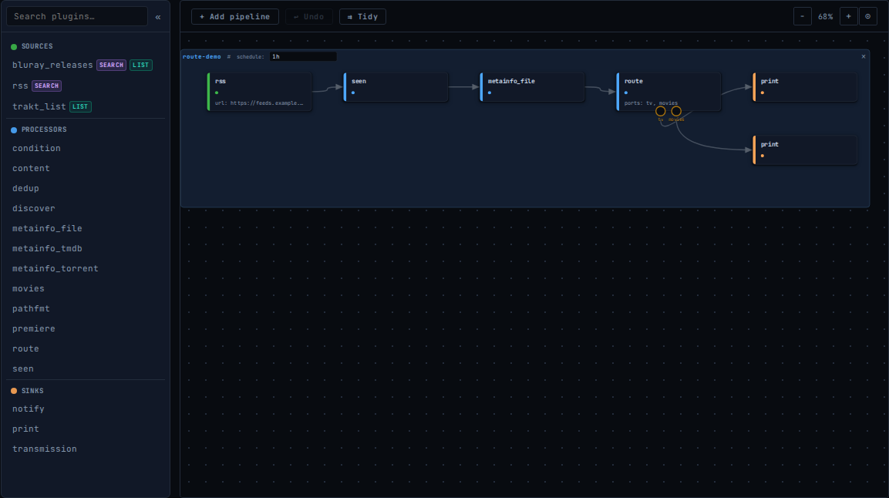
The route() node shows one named port per condition. Each port feeds an independent downstream chain.
Why route() instead of separate condition filters?
Separate condition filters with fan-out achieve the same routing, but the DAG validator emits soft ~ warnings at the merge point because it sees two branches with different field sets. route() declares the branches are mutually exclusive, so the validator handles field tracking correctly at merge points — no spurious warnings, and the intent is explicit.
Fields set
_route_port (string) — name of the matched port (e.g. "series"). Available to downstream plugins including pathfmt templates, condition expressions, and exec commands.
Routing on entry state
Port conditions can reference the reserved state identifier to fan out post-sink decisions — entries the upstream sink failed go to one port, entries it accepted go to another. The classic "notify on failure" pattern:
dl = output("transmission", upstream=picked, host="localhost")
routes = route(dl,
failed_alert = "state == 'failed'",
ok = "state == 'accepted'")
output("notify", via="email", upstream=routes.failed_alert,
to="me@example.com", subject="Download failed",
body="{{.Title}}: {{.reject_reason}}")
output("notify", via="pushover", upstream=routes.ok,
message="{{.Title}} queued")Stamping _route_port on a Failed or Rejected entry preserves its state and reason — the port assignment is metadata, not a re-acceptance. Unmatched terminal-state entries pass through unchanged instead of being re-rejected.
Downstream sinks that should actually process those failed/rejected entries need to declare the corresponding InputStates — see PLUGIN_DEVELOPMENT_GUIDE.md in the repository for the pattern.
Route port field inference
The DAG validator automatically infers field contracts from each port's condition expression — no explicit annotations needed. The same logic used by the condition filter applies to every port condition:
| Expression form | Effect on this branch |
|---|---|
field != "" | field promoted to certain — a downstream Requires passes without a ~ warning |
field == "" | field removed from the reachable set — a downstream Requires is a hard validation error |
A and B | both sides' fields inferred (union) |
A or B | only fields that appear in every branch (intersection) |
routes = route(src,
torrent = "torrent_url != '' and magnet_url == ''",
magnet = "magnet_url != '' and torrent_url == ''")
# torrent branch: torrent_url is certain, magnet_url is removed
# magnet branch: magnet_url is certain, torrent_url is removed
# A plugin that accidentally Requires magnet_url on the torrent branch → load-time errorguarantees or masks parameter to keep in sync.
Merge point behaviour
When branches merge back together, the validator uses the intersection of the certain field sets across all merging branches. Only fields that are certain on every branch remain certain after the merge. Fields certain on one branch but removed or absent on another become reachable-only, producing a soft ~ warning if a downstream node requires them.
# After merging the torrent and magnet branches:
# - common fields remain certain
# - torrent_url and magnet_url become uncertain (each entry has one but not both)
# - a sink that Requires torrent_url downstream of the merge gets a ~ warning
output("transmission", upstream=merge(routes.torrent, routes.magnet), ...)Visual editor
In the visual editor, each route rule shows only a port name and condition expression. Field availability for downstream nodes is updated automatically as you edit conditions — the field panel on each downstream node reflects the inferred contracts in real time.
report_empty
Emits a synthetic marker entry when its upstream produced no entries; emits nothing otherwise. Lets you opt into "alert when nothing came back" patterns — by default a tracker timeout or an empty search just produces a quiet run, and no downstream sink ever fires because every per-entry plugin (condition, route, every sink) needs at least one entry to act on.
| Key | Required | Default | Description |
|---|---|---|---|
message | no | "(no entries)" | Title to set on the marker entry. Customise per-pipeline so the notification carries useful context. |
Behaviour
| Upstream | Output |
|---|---|
| 0 entries | 1 marker entry — Title=message, URL=pipeliner://empty/<task>, State=Accepted, field empty_marker=true |
| 1+ entries | 0 entries — everything dropped |
It is a marker-only emitter: chain it on a fan-out branch from the upstream you want to monitor — the main path of your pipeline must read from that upstream directly, not from report_empty's output.
src = input("rss", url="https://feeds.example.com/my-show")
# Main path — reads from src directly.
seen = process("seen", upstream=src)
output("transmission", upstream=seen, host="localhost")
# Alert path — separate fan-out branch off src.
alert = process("report_empty", upstream=src,
message="RSS feed returned no entries this run")
output("notify", upstream=alert,
via="email", title="Pipeliner alert",
body="{{range .Entries}}{{.Title}}{{end}}",
config={"smtp_host": "smtp.example.com", ...})Opt-out is just node placement: if you don't add the report_empty node, no marker is ever generated and the alert sink never fires.
Placing report_empty downstream of a filter chain (rather than directly on the source) alerts on "nothing survived filtering" instead of "the source itself returned nothing" — both are useful, the placement decides which.
torrentalive
Rejects torrents with fewer than a minimum number of seeds. The torrent_seeds field is set by the RSS input, jackett, and jackett. Entries without seed data are left undecided.
| Key | Required | Default | Description |
|---|---|---|---|
min_seeds | no | 1 | Minimum seed count required |
alive = process("torrentalive", upstream=upstream, min_seeds=3)trailer
Detects trailer/teaser/featurette/behind-the-scenes entries by matching title tokens (trailer, teaser, sneak peek, featurette, behind the scenes, BTS) with case-insensitive word boundaries. Useful as a guard on movie pipelines where trackers occasionally publish trailer rips alongside the full release.
| Key | Required | Default | Description |
|---|---|---|---|
mode | no | reject | reject drops trailer-like entries; accept rejects everything that is not a trailer (useful for trailer-only feeds) |
# Default: drop trailers from a movies pipeline.
clean = process("trailer", upstream=src)
# Or keep only trailers.
trailers = process("trailer", upstream=src, mode="accept")require
Rejects entries missing one or more required fields. A field is "missing" if its value is nil, empty string, zero, false, or empty slice.
req = process("require", upstream=upstream, fields=["enriched", "series_episode_id"])enriched as a metainfo gate. External metainfo plugins (TVDB, TMDb, Trakt) set enriched = true only when they successfully identify the entry. Adding enriched to require rejects anything the provider did not recognise — new releases not yet in the database, foreign titles, or unrecognized content.
meta = process("metainfo_tvdb", upstream=upstream, api_key=env("TVDB_KEY"))
req = process("require", upstream=meta, fields=["enriched"])enriched is set by any external provider, the same config works unchanged if you later swap TVDB for TMDb or Trakt.seen
Rejects entries already processed in a previous run, using a SHA-256 fingerprint of configured fields stored in pipeliner.db. Fingerprints are written only after all downstream sinks confirm — if a sink fails an entry, it is not marked seen and will be retried on the next run.
seen for pipelines without a domain-specific tracker — the most common case is RSS news or article feeds, where the same article would otherwise be re-processed every run.| Key | Required | Default | Description |
|---|---|---|---|
fields | no | ["url"] | Fields to include in the fingerprint |
local | no | false | Scope seen store to this task name only |
Typical use — tech news to email, preventing re-delivery of already-sent articles:
src = input("rss", url="https://feeds.arstechnica.com/arstechnica/index")
seen = process("seen", upstream=src)
flt = process("regexp", upstream=seen, accept=["(?i)linux|golang|open.?source"])
acc = process("accept_all", upstream=flt)
output("notify", upstream=acc, via="email",
config={"smtp_host": "smtp.gmail.com", "smtp_port": 587,
"username": env("SMTP_USER"), "password": env("SMTP_PASS"),
"sender": env("SMTP_USER"), "to": env("SMTP_TO")},
title="{{len .Entries}} new article(s)")
pipeline("tech-news", schedule="1h")exists
Rejects entries whose target file already exists on disk. Compares normalized filenames (case-insensitive).
| Key | Required | Default | Description |
|---|---|---|---|
path | yes | — | Directory to check |
recursive | no | false | Check subdirectories recursively |
list_match
Accepts entries whose title is in a named persistent list. The list is populated by the list_add output plugin. Pairs with list_add for cross-task coordination.
| Key | Required | Default | Description |
|---|---|---|---|
list | yes | — | Name of the list |
remove_on_match | no | false | Remove entry from list after matching (one-shot queues) |
reject_unmatched | no | true | Reject entries that do not match the list. Set to false to leave them undecided when chaining filters. |
regexp
Accepts or rejects entries by regular expression. Rejection patterns are checked first.
| Key | Required | Default | Description |
|---|---|---|---|
accept | conditional | — | Pattern(s); entry accepted if any matches |
reject | conditional | — | Pattern(s); entry rejected if any matches |
from | no | ["title"] | Fields to match against |
flt = process("regexp", upstream=upstream,
accept=["(?i)golang", "(?i)kubernetes"],
reject=["(?i)sponsored"])age
Rejects entries whose date field falls outside a configured age window. Useful for keeping pipelines focused on recent content or for enforcing a waiting period before downloading (e.g. wait 30 days for a higher-quality release to appear).
The field value can be any entry field that holds a time.Time (e.g. series_episode_air_date, torrent_creation_date, file_modified_time) or a date string in any common format (RFC3339, RFC822, RFC1123, YYYY-MM-DD, and others). When the field is absent and on_missing is pass (the default), the entry is not rejected.
| Key | Required | Default | Description |
|---|---|---|---|
field | no | published_date | Entry field to read the date from |
newer_than | conditional | — | Reject entries older than this duration (e.g. 7d, 2w, 24h) |
older_than | conditional | — | Reject entries newer than this duration |
on_missing | no | pass | pass or reject when the field is absent or unparseable |
At least one of newer_than or older_than must be set. Duration values accept d (days) and w (weeks) in addition to standard Go durations (h, m, s).
# Only entries published in the last two weeks
recent = process("age", upstream=src, newer_than="14d")
# Wait 30 days before downloading (higher-quality releases appear later)
mature = process("age", upstream=src, older_than="30d")
# Combine: published between 30 days and 1 year ago
window = process("age", upstream=src, older_than="30d", newer_than="52w")
# Filter by episode air date instead of feed publication date
by_air = process("age", upstream=enriched,
field="series_episode_air_date", newer_than="7d")content
Rejects or requires entries based on filenames. The file list is resolved in order:
torrent_files— set bymetainfo_torrentormetainfo_magnet(DHT). Full file list from the torrent.file_locationbasename — set by thefilesystemplugin for local files.- URL path component — last segment of the entry URL, for direct-download entries where the URL reveals the file type (e.g.
http://tracker.com/file.rar).
When none of the above is available the check is skipped and a Warn is logged. Run with --log-level debug to see which source was used.
Patterns use path.Match semantics, tested against both the filename component and the full path.
ct = process("content", upstream=upstream,
reject=["*.exe", "*.bat"],
require=["*.mkv"])dedup
Keeps the best-quality copy when multiple entries for the same episode or movie arrive in one run. The series and movies filters accept all quality variants so you can get the best available copy — place dedup after them to select the winner.
Takes no config. media_type classifies the entry: "series" entries dedup by series name + series_episode_id, "movie" entries by title. Entries without media_type pass through unchanged. Place metainfo_file, metainfo_tmdb, or metainfo_tvdb upstream so the classifier is set — the DAG validator emits a warning when no upstream is guaranteed to produce media_type.
Selection order (highest wins):
- Seed tier — entries with 2 or more seeders beat entries with 1
- Resolution — higher wins (2160p > 1080p > 720p > …)
- Seed count — more seeds wins when tier and resolution tie
src = input("rss", url="https://feed.example.com/rss")
seen = process("seen", upstream=src)
meta = process("metainfo_file", upstream=seen)
q = process("quality", upstream=meta, spec="720p+")
series = process("series", upstream=q,
static=["Breaking Bad"], tracking="strict")
best = process("dedup", upstream=series)
output("transmission", upstream=best, host="localhost")
pipeline("tv")limit
Caps the number of accepted entries to n, rejecting the rest. Useful on manually-triggered pipelines that go wide on a watchlist or discover-set and would otherwise hand 50+ downloads to the sink at once.
| Key | Required | Default | Description |
|---|---|---|---|
n | yes | — | Maximum number of accepted entries to forward (must be ≥ 1) |
sort | no | — | Entry field to sort by; without it, the first n in arrival order win |
order | no | desc | Sort direction when sort is set: desc or asc |
Entries missing the sort field are bucketed last regardless of order, so they never beat an entry that has the field. Numeric types (int, int64, float64) compare across each other; strings, time.Time, and booleans are also supported. String-encoded dates (RFC3339, RFC822, 2006-01-02, …) are promoted to time.Time before comparison, so published_date from RSS feeds sorts chronologically.
# Cap a manual 3D-discovery pipeline to 5 movies per run, highest-rated first.
src = input("trakt_list", list="watchlist", access_token=env("TRAKT_TOKEN"))
disc = process("discover", upstream=src, search=["jackett"], match=True)
meta = process("metainfo_file", upstream=disc)
q3d = process("condition", upstream=meta,
accept=[{"name": "3d", "expr": "video_is_3d"}])
ext = process("metainfo_tmdb", upstream=q3d, api_key=env("TMDB_KEY"))
top5 = process("limit", upstream=ext, n=5, sort="video_rating")
output("transmission", upstream=top5, host="localhost")
pipeline("3d-movies") # manual trigger onlyseen to incrementally chip away at a backlog: each manual run downloads n, seen persists them, the next run picks up the next batch.accept_all
Accepts every entry that is not already accepted or rejected. Useful before list_add when the task's only purpose is list population.
acc = process("accept_all", upstream=upstream) # no config neededModify Processors
pathfmt
Renders a path template into a named entry field, automatically scrubbing each path component so the result is safe to use as a filesystem path. Characters invalid on common filesystems (<>:"/\|?* and control characters) are replaced with underscores.
| Key | Required | Description |
|---|---|---|
path | yes | Template string (supports {field}, {field:format}, and {{.field}}) |
field | yes | Entry field to write the rendered path into (e.g. download_path) |
fmt = process("pathfmt", upstream=upstream,
path="/media/tv/{title}/Season {series_season:02d}",
field="download_path")A colon in a show title like "Breaking Bad: Season 1" becomes an underscore, yielding Breaking Bad_ Season 1. No separate pathscrub step is needed.
set
Unconditionally sets one or more entry fields. Each config key becomes a field name; its value is a Go template rendered against the entry.
tagged = process("set", upstream=upstream, category="tv", label="{{.title}}")swap_state
Swaps entries between two states (e.g. accepted ↔ rejected). Unlike most processors it deliberately operates on rejected and failed entries — its purpose is to flip them so downstream nodes can act on them. The classic use case is a cleanup pipeline: dedup rejects duplicate copies of a movie, and swap_state flips those losers into accepted (reaching a delete sink) while simultaneously flipping the winners into rejected (filtered out by the sink). The bidirectional swap is what makes a single sink target only the duplicates.
| Key | Required | Description |
|---|---|---|
swap | yes | Two distinct state names from {accepted, rejected, failed, undecided}; entries in either state are flipped to the other, entries in any third state are untouched |
cleanup = process("swap_state", upstream=dedup_node, swap=["accepted", "rejected"])
output("exec", upstream=cleanup, command="rm -f {file_location}")AcceptReason / RejectReason / FailReason survive the swap as audit history — a rescued failed entry still carries its original FailReason for templates. The swap itself is recorded on Entry.LastStateChange (From, To, Plugin, Reason, At) so notify templates can render both:
{{.FailReason}} → deluge: connection refused
{{.LastStateChange.Reason}} → swap [accepted, failed]Requires were only satisfied by upstream narrowing (a require filter or a condition that rejected entries missing the field) will get a may not be present warning across a swap_state that revives those rejected entries. This is intentional — the revived entries don't have the narrowed field, so the downstream guarantee no longer holds. Move the swap to immediately before the sink that needs to act on the revived population, or add a downstream require/condition to re-establish the contract on the new population.Sink Plugins
Sink plugins act on accepted entries. Use them with output(). Call output() multiple times from the same upstream node for fan-out (each sink gets independent entry copies).
deluge, qbittorrent, transmission, download) mark an entry as failed when they cannot queue or fetch it. Failed entries will be retried on the next run. Notification plugins (email, exec, print, notify) do not mark entries failed — a notification failure does not cause a retry.deluge
Adds accepted torrents to a Deluge client via the Web UI JSON-RPC API.
| Key | Required | Default | Description |
|---|---|---|---|
host | no | localhost | Deluge Web UI host |
port | no | 8112 | Web UI port |
password | yes | — | Web UI password |
tls | no | false | Use HTTPS |
path | no | {{.download_path}} | Download directory template |
move_completed_path | no | — | Move completed downloads here |
output("deluge", upstream=ready,
host="localhost", password=env("DELUGE_PASS"),
move_completed_path="{download_path}")qbittorrent
Adds accepted torrents to a qBittorrent client via Web API v2.
| Key | Required | Default | Description |
|---|---|---|---|
host | no | localhost | qBittorrent host |
port | no | 8080 | Web UI port |
tls | no | false | Use HTTPS |
username | no | — | Web UI username |
password | no | — | Web UI password |
savepath | no | {{.download_path}} | Download directory template |
category | no | — | Torrent category |
tags | no | — | Comma-separated tags |
transmission
Adds accepted torrents to a Transmission client via JSON-RPC. Session-ID handshake is handled automatically.
| Key | Required | Default | Description |
|---|---|---|---|
host | no | localhost | Transmission host |
port | no | 9091 | RPC port |
rpc_path | no | /transmission/rpc | RPC endpoint path |
username | no | — | HTTP basic auth username |
password | no | — | HTTP basic auth password |
path | no | {{.download_path}} | Download directory template |
paused | no | false | Add torrent in paused state |
download
Downloads each accepted entry's URL to a local file. Uses an atomic write (temp file + rename) to avoid partial files. Sets download_path on the entry.
| Key | Required | Default | Description |
|---|---|---|---|
path | yes | — | Destination directory |
filename | no | {{.url_basename}} | Filename template (also has url_basename and timestamp) |
exec
Runs a command for each accepted entry. The command is a template rendered against the entry, then split on whitespace and executed directly — there is no shell, so pipes, globs, and variable expansion are not supported.
| Key | Required | Description |
|---|---|---|
command | yes | Command template; split on whitespace and executed directly (no shell — no pipes, globs, or variable expansion) |
output("exec", upstream=ready, command='notify-send "New download" "{{.Title}}"')Prints each accepted entry to stdout. Useful for debugging or pipeline inspection.
| Key | Required | Default | Description |
|---|---|---|---|
format | no | {{.Title}}\t{{.URL}} | Output template |
notify
Sends a batch-level notification via a configured notifier. One notification per run (not per entry).
| Key | Required | Default | Description |
|---|---|---|---|
via | yes | — | Notifier type: webhook, email, or pushover |
title | no | auto | Notification title template |
body | no | auto | Notification body template |
on | no | — | Set to all to notify even when no entries accepted |
Notifier-specific config goes inside a nested config={} dict — not as flat keys on the notify call. See email notifier, pushover, and webhook for available keys.
output("notify", upstream=ready,
via="webhook",
config={"url": env("DISCORD_WEBHOOK_URL", default="https://…")},
title="pipeliner — {{len .Entries}} new item(s)")decompress
Extracts RAR, ZIP, and 7z archives. Requires unrar, 7z, or unar on $PATH.
| Key | Required | Default | Description |
|---|---|---|---|
to | yes | — | Destination directory |
keep_dirs | no | true | Preserve internal directory structure |
delete_archive | no | false | Remove archive after extraction |
tool | no | auto | Force tool: unrar, 7z, or unar |
list_add
Stores accepted entries in a named persistent list for use by list_match in the same or another task.
| Key | Required | Description |
|---|---|---|
list | yes | List name |
Notify Plugins
Notify plugins are used by the notify output plugin via the via: key.
email (notifier)
Sends a single summary email via SMTP.
| Key | Required | Default | Description |
|---|---|---|---|
smtp_host | yes | — | SMTP server hostname |
port | no | 25 | SMTP port |
sender | yes | — | Sender address |
to | yes | — | Recipient address(es) |
username | no | — | SMTP auth username |
password | no | — | SMTP auth password |
pushover
Sends a notification via the Pushover API.
| Key | Required | Description |
|---|---|---|
user | yes | Pushover User Key |
token | yes | Pushover API Token |
device | no | Target device name |
webhook
POSTs a JSON payload to an HTTP endpoint.
| Key | Required | Description |
|---|---|---|
url | yes | Webhook endpoint URL |
headers | no | Additional HTTP headers (map) |
Payload: {"title": "...", "body": "...", "entries": [{"title": "...", "url": "..."}]}
Operations
CLI Reference
pipeliner run
Executes tasks once and exits.
pipeliner run [--config path] [--log-level level] [--log-plugin name[,name...]] [--dry-run] [task ...]| Flag | Default | Description |
|---|---|---|
--config | config.star | Path to config file |
--log-level | info | debug, info, warn, error |
--log-plugin | — | Show log output from only these plugins, comma-separated (e.g. metainfo_tvdb,series); task-level logs always shown |
--dry-run | false | Skip all sinks and state commits; sources and processors run normally (idempotent) |
task ... | all | Optional list of task names to run |
pipeliner daemon
Runs tasks on their configured schedules. Starts the web UI if --web is specified.
Graceful shutdown: on SIGINT (Ctrl-C) or SIGTERM, the scheduler stops firing new pipeline runs and the in-flight pipelines see their context cancelled. The daemon then waits up to 30 seconds for those pipelines to unwind cleanly so the commit phase can persist tracker state and any half-applied sink work can complete. A second SIGINT/SIGTERM during the wait forces an immediate exit (code 1).
pipeliner daemon [--config path] [--web addr] [--web-user u] [--web-password p]
[--log-level level] [--log-plugin name[,name...]]
[--tls-cert path] [--tls-key path] [--tls-self-signed]| Flag | Default | Description |
|---|---|---|
--config | config.star | Path to config file |
--web | — | Web UI listen address (e.g. :8080); empty disables |
--web-user | — | Web UI username (required with --web) |
--web-password | — | Web UI password (required with --web) |
--tls-cert | — | Path to TLS certificate file |
--tls-key | — | Path to TLS private key file |
--tls-self-signed | false | Generate a self-signed certificate at startup |
--log-level | info | Log verbosity |
--log-plugin | — | Filter log output to one or more plugins, comma-separated |
pipeliner check
Validates the config file without running any pipelines. Reports unknown plugins, graph structure errors (cycles, disconnected nodes), field requirement violations, and per-plugin config errors.
pipeliner check [--config path]pipeliner version
Prints the version string and exits.
Web UI
Start the web UI with pipeliner daemon --web :8080 --web-user admin --web-password secret. Navigate to http://localhost:8080.
The interface has four tabs: Dashboard, Config, Database, and Settings. Within the Config tab, toggle between the ✏ Text editor and the ⬡ Visual pipeline editor. The header contains a User Guide link and a Sign out button that ends the current session and returns to the login page.
Dashboard tab
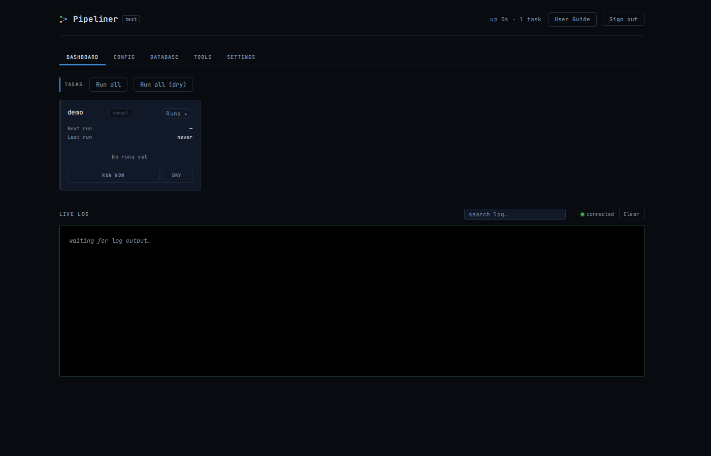
- Task cards — each card shows the next scheduled run datetime (hover for the raw cron/interval), the last run time, accepted/rejected/failed counts, and a Run now button. A next run whose time has already passed reads overdue. If a trigger request fails (network error, task no longer exists after a config edit) the button briefly shows Failed — see log in red and the detail is logged to the browser console.
- Run history — click a card's header (or the ▸ chevron) to expand the task's recent runs: up to 20 entries with relative timestamp (hover for the absolute time), duration, accepted/rejected/failed/undecided counts, a
DRYbadge for dry-runs, and the error text for failed runs. A small red dot next to the task name on a collapsed card means one of the last 5 runs errored — useful when a failed run was followed by a successful one. Expansion state survives the 10-second dashboard refresh. - Run all — triggers all tasks immediately.
- Reload config — reloads
config.starfrom disk without restarting the process. Queued for after running tasks finish if any are active. - Live Log — a windowed view over
pipeliner.logwith a server-side search box. The newest lines stream in via SSE; scroll up to lazy-load older entries from the rotating file (acrosspipeliner.log.1….5) until ── start of recorded history ──. Scrolling away from the bottom pauses auto-scroll and surfaces a "N new ↓" pill; click it (or scroll back to the bottom) to resume live-follow. The filter searches the entire on-disk log — typing it again later yields the same results regardless of how much you've scrolled. Clear empties the view client-side only — a ── cleared ── marker takes the place of the removed lines, new output resumes below it, and the on-disk log is untouched (scroll up to page the history back in).
The header's up … indicator shows the daemon's uptime (from the server), not how long the browser page has been open.
Config tab — Text editor
A live Starlark editor with syntax highlighting. Use Validate to check config without saving, or Save & Reload to write and apply immediately (or queue a reload if tasks are running). Tab key inserts two spaces.
Two safety nets guard against losing config: navigating away with unsaved edits prompts for confirmation, and if the config fails to load from the server (so the editor would be empty) Save & Reload is disabled — an empty editor is indistinguishable from an empty config, and saving it would overwrite the real file. Click Validate to retry loading.
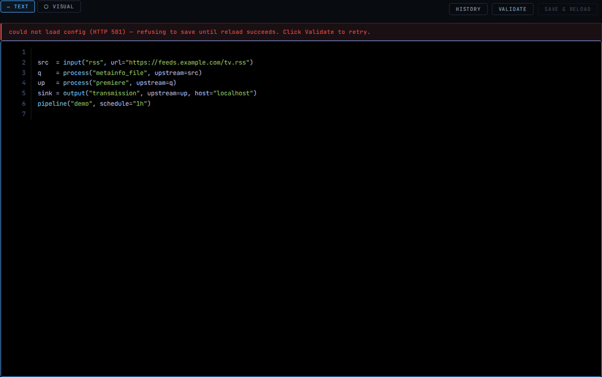
Config tab — Visual editor
The Config tab opens directly in the visual pipeline editor. Use the ✏ Text / ⬡ Visual toggle in the toolbar to switch between the two views. On first open the canvas auto-zooms so all pipelines fit within the viewport width.
Palette
The left panel lists all registered plugins grouped by role: Sources (green), Processors (blue), and Sinks (orange). Click a plugin to add it to the canvas, or drag it to a specific position. Use the search box to filter by name or description.
Canvas
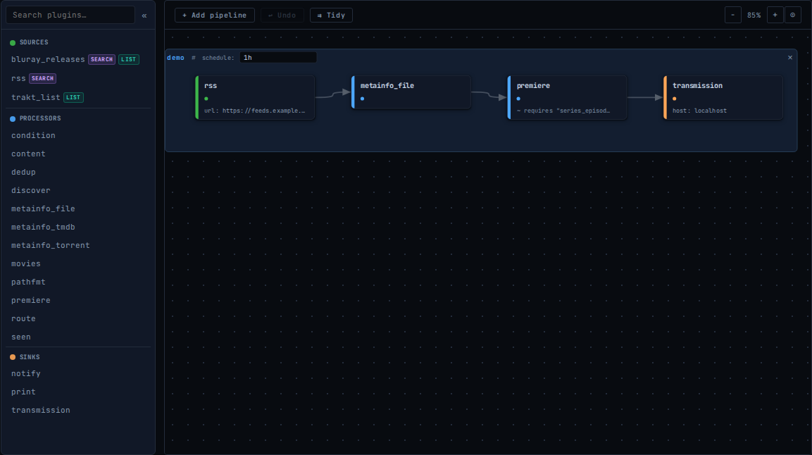
Each node on the canvas shows its plugin name, role badge, upstream connections, and a preview of its most important config values. Click a node to select it and edit its configuration in the right panel. Drag nodes to reorder them. The pipeline name and schedule are shown at the top; edit them inline.
Each node has a small # button (top-right of the card) for attaching a free-text comment. The comment is emitted as # … lines immediately above the node's assignment in the generated Starlark. The pipeline label also has a # button for a pipeline-level comment, emitted above the pipeline() call. Both support multi-line text.
Multi-select, copy, cut and undo
Drag on empty canvas space to draw a rubber-band selection rectangle — all nodes within the rectangle are added to the selection. Alternatively, hold Cmd (Mac) or Ctrl (Windows/Linux) and click individual nodes to toggle them in or out of the selection.
When two or more nodes are selected, the toolbar shows Copy, Cut, and ⬡ Extract to function. Dragging any selected node moves all selected nodes together.
The ↩ Undo button (also Cmd/Ctrl+Z) reverses the last action — node creation, deletion, connections, paste, extract, and pipeline operations are all undoable (up to 50 steps).
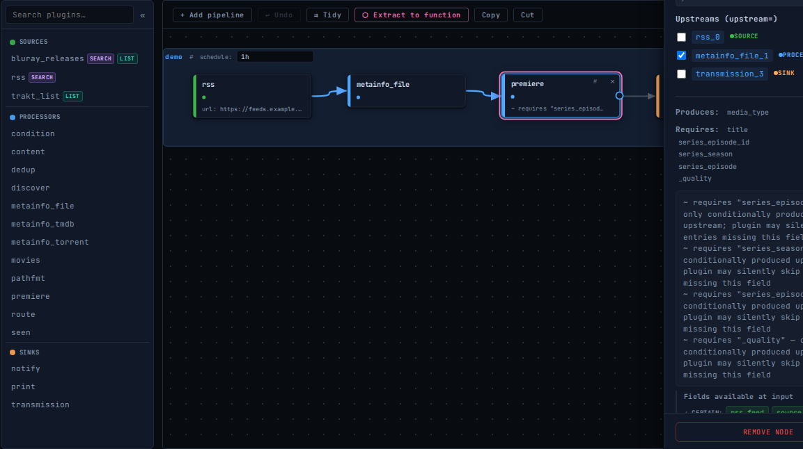
Multi-selecting nodes with Cmd+Click: the toolbar shows contextual actions. ↩ Undo is always visible and enables as soon as an undoable action has been taken.
Param panel
The right panel shows the selected node's configuration. At the top, checkboxes let you connect the node to any existing upstream node (sets the upstream= relationship). Below, all config keys are editable with appropriate input widgets. A Produces section lists fields the plugin always sets; a dimmed May produce section lists fields set only when data is available (e.g. when a metadata lookup succeeds). Field warnings appear when required fields are missing or only conditionally available upstream.
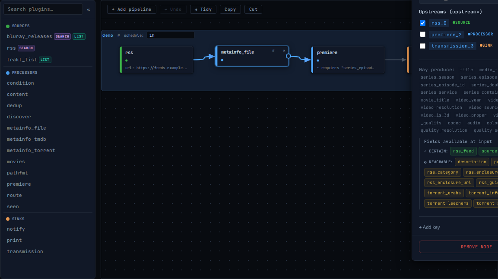
metainfo_file selected: Produces lists guaranteed fields; May produce lists fields set only when the title parses for a given media type (series_*, movie_*) or quality string (codec, audio, color range).
Connection validation
The visual editor checks field reachability at two levels:
- Error (⚠ amber) — a required field is not produced by any upstream node at all. Fix by adding the appropriate plugin upstream (e.g. add
metainfo_filebeforepremiere). - Warning (~ grey) — a required field is only conditionally produced upstream (the upstream plugin may not set it on every entry, for example
metainfo_torrentonly extracts file lists from entries it can parse). The pipeline will still run, but the plugin may silently skip entries that arrive without the field.
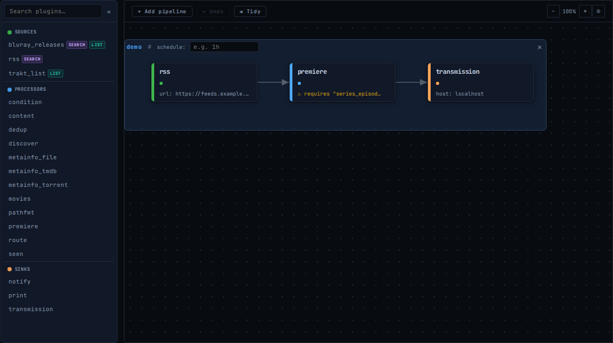
Hard error: premiere placed directly after rss with no metainfo_file in between — the required series_episode_id field has no upstream producer.
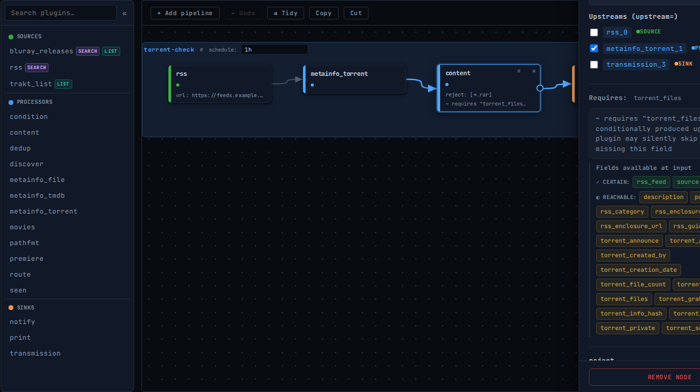
Soft warning: content requires torrent_files, which metainfo_torrent only may produce (it skips entries that are not .torrent URLs). The param panel shows the full explanation.
The same warnings are also surfaced in the text editor after Validate or Save & Reload, displayed in an amber box below any hard errors.
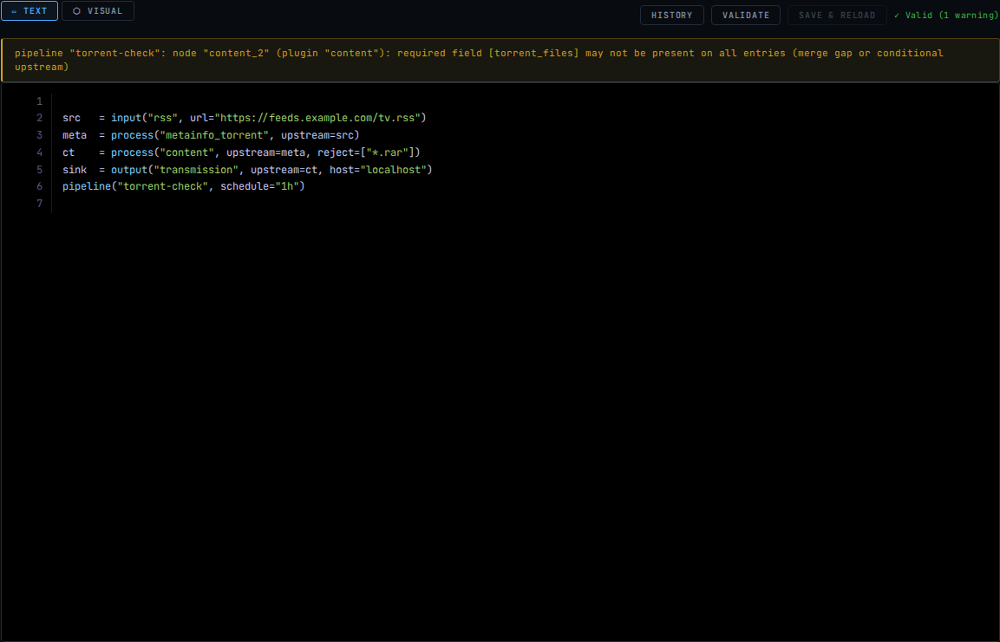
After clicking Validate, the status line shows ✓ Valid (1 warning) and the amber box explains which node and field are affected.
Saving
Changes in the visual editor sync automatically to the text editor. Use Save & Reload in the toolbar to apply. Switch to the ✏ Text view to edit Starlark directly; switching back to ⬡ Visual re-parses the text and reloads the canvas. Merely opening the Config tab (or switching to the visual view) never rewrites a hand-authored config — your variable names, comments, and formatting are preserved until you actually change something on the canvas, at which point the whole file is regenerated from the visual model.
User functions as list and search sources
Plugins that accept a list= port (movies, series) or a search= port (discover) can be fed by a user-defined function — not just by registered plugins. This lets you build a mini-pipeline inside a function and plug it directly into a list or search slot.
How to create a list-source function:
- Add the source and processor nodes that form your list pipeline to the canvas — for example, a
trakt_listsource feeding into atraktprocessor. - Select all nodes in the chain (click then Shift-click, or use box-select).
- Click ⬡ Extract to function in the toolbar. Give it a name (e.g.
unwatched_movies), optionally add a comment describing the function, and expose any config values you want parameterised. - The function appears as a chip in the Functions section of the palette. If the chain contains a list-capable source, the chip shows a teal LIST badge.
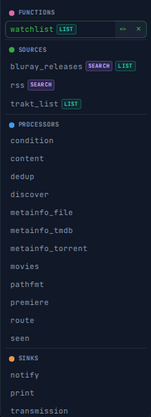
How to connect it:
- Drag from the teal list port on the
movies(orseries) node to the function chip. The chip will highlight when it is a valid drop target — only chips with the LIST badge are accepted. - Alternatively, drag the function chip from the palette directly onto the canvas, then drag from the list port to the newly placed call node.
The function call appears as a sub-node below the accepting node, labelled with the step names in the chain (e.g. trakt_list→trakt). The param panel shows it under List (list sources).
To edit a function's body or parameters later, click the ✏ button on any call node. This opens the function editor, which shows the function's internal nodes on the canvas with the usual editing tools. The toolbar provides a ⚙ Params button to manage parameters and a # button to edit the function's comment (shown above the def line in the config). Click Save to apply changes and return to the pipeline view.
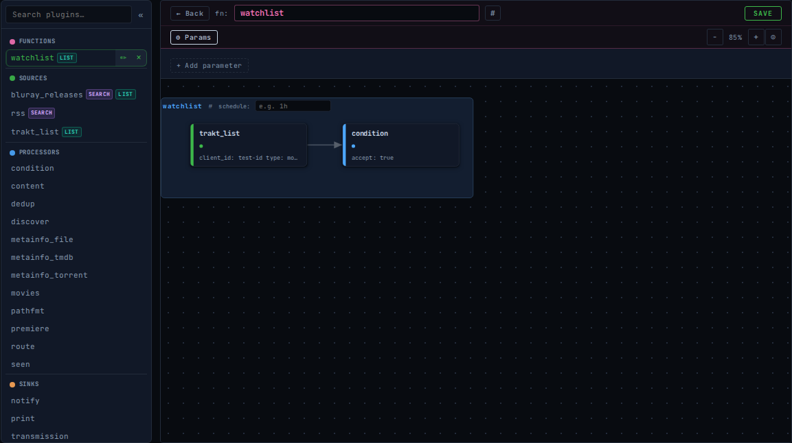
The function editor replaces the pipeline canvas with the function's internal nodes. Row 1 of the toolbar has navigation and the function name (editable inline); Row 2 has ⚙ Params and zoom controls. The Params panel (shown open) lets you promote config fields to function parameters.
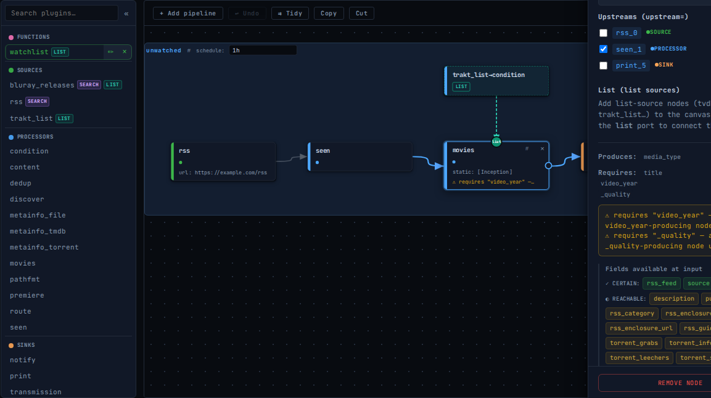
The same pattern applies to search= ports on discover: a function whose body starts with a search plugin (jackett, rss) will carry a SEARCH badge and can be connected to the discover search port.
In Starlark, the connection is expressed as list=[my_func()]:
# pipeliner:param type=string Trakt client ID
def unwatched_movies(client_id):
src = input("trakt_list", client_id=client_id, type="movies", list="watchlist")
flt = process("trakt", upstream=src, client_id=client_id, type="movies",
list="history", reject_matched=True, reject_unmatched=False)
return flt
src = input("rss", url="https://example.com/rss")
seen = process("seen", upstream=src)
movies = process("movies", upstream=seen, list=[unwatched_movies(client_id=env("TRAKT_ID"))],
static=["Inception"])
output("transmission", upstream=movies, host="localhost")
pipeline("my-movies", schedule="1h")Database tab
Inspect and manage the download trackers and metainfo caches stored in pipeliner.db.
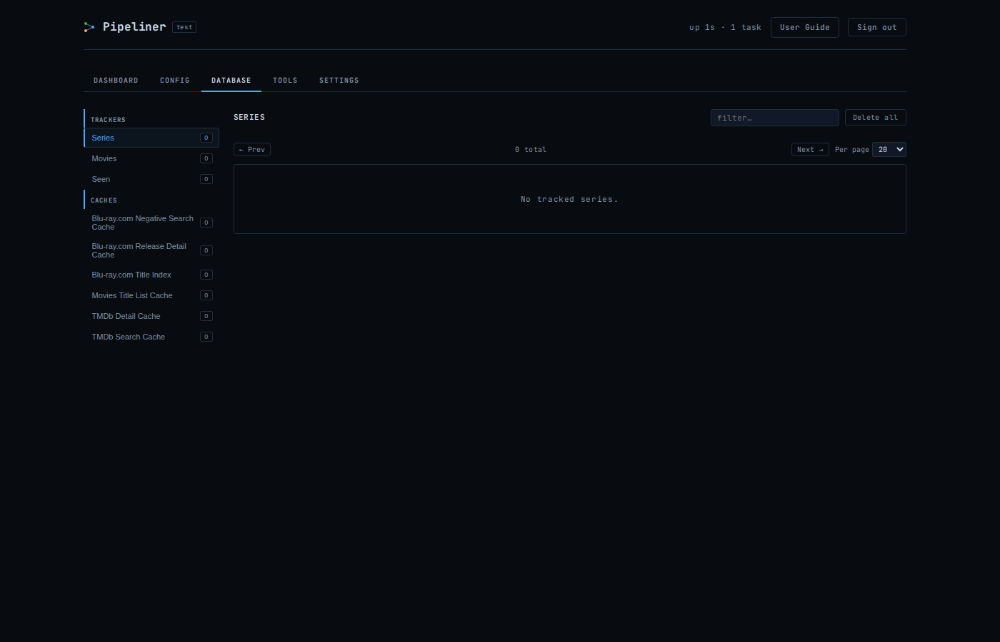
The sidebar is split into two sections — Trackers and Caches. Click any entry to load its contents in the main panel. A filter box and Delete all button appear for the active bucket; every row has a per-entry delete button. All deletions — per-row, per-show, and bucket-wide — ask for confirmation first, and after a row deletion the table keeps your active filter and current page.
Trackers
- Series — all TV episodes recorded as downloaded, grouped by show. Expand a show to see each episode's ID, quality, and download date. Delete an individual episode or an entire show to force a re-download on the next run. Includes entries from both the
seriesandpremierefilters. - Movies — all movies recorded as downloaded. Delete a movie to force a re-download.
- Seen — entries recorded by the
seenfilter, showing title, task name, and date. Delete an entry to allow it to be processed again. Per-task local seen stores (local: true) appear as separate sidebar entries named Seen: task-name.
Caches
Every cache_* bucket maintained by a plugin (TVDB/TMDb/Trakt enrichment, the Blu-ray.com index and negative caches, discover/series/movies title caches, etc.) is listed here with a human-readable label declared by the plugin itself. Plugin-declared caches appear in the sidebar even before the plugin has written its first entry — you can clear or inspect a cache pre-emptively without waiting for a run to populate it. Each row shows the cache key, a one-line value preview ([3 items] for arrays, {a, b, c, …} for objects, scalars truncated), and a relative expiry label (in 4d 12h or expired 3d ago).
Use this section to delete a single cached entry when a lookup looks wrong (for instance a Blu-ray.com row that picked the wrong release, or a negative-cache row for a title you know exists) and to clear a whole bucket when you want a plugin to refetch everything on the next run. The TTL label is the timestamp the in-process cache uses to decide whether a row is still valid; "expired" rows have already lapsed and will be replaced by the next miss.
Settings tab
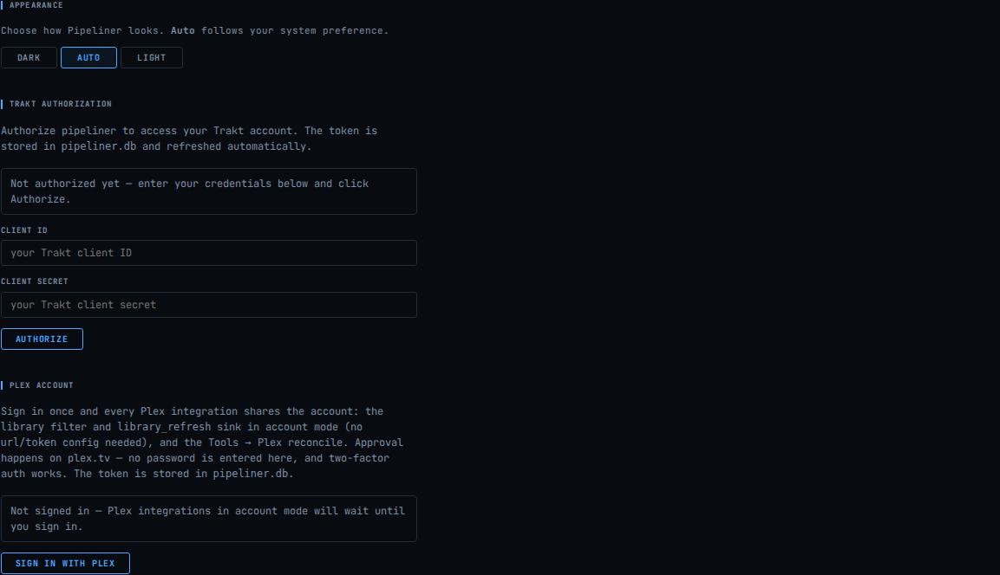
Appearance
The Appearance section lets you choose a colour scheme independent of your operating system preference:
- Dark — always use the dark theme regardless of system setting
- Auto — follow the OS
prefers-color-schemesetting (default) - Light — always use the light theme regardless of system setting
Your preference is saved in browser local storage and applied on every page load, including the login page.
Plugin Debug Logging
Enable DEBUG-level output for individual plugins without raising the global log level. This is the runtime equivalent of starting the daemon with --log-level=debug --log-plugin=name, except you can toggle it on and off without a restart.
Each checkbox flips the matching plugin's debug output on or off as you click it; changes take effect immediately on the running daemon and apply to both the stderr stream and pipeliner.log. The set is held in memory and resets when the daemon restarts — so you can leave the UI in whatever state you like during a long debug session and a planned restart will clean it up.
Typical uses: turn on metainfo_bluray while diagnosing a misclassified 3D release, or enable metainfo_tvdb when an episode lookup misses. The filter field accepts plugin name, role, or description substrings.
Trakt Authorization
The Settings tab provides a Trakt Authorization form for completing the Trakt device auth flow directly in the browser — useful when running in Docker or any environment where interactive console access is not available. Enter your client_id and client_secret, click Authorize, then visit the displayed URL and enter the code on Trakt's website. The token is saved to pipeliner.db automatically on success and refreshed before expiry, exactly as if you had run pipeliner auth trakt from the CLI.
HTTPS
Pass --tls-cert and --tls-key for a real certificate, or --tls-self-signed to generate one automatically. With TLS the Secure cookie flag is set automatically.
Docker
Multi-platform images are published to the GitHub Container Registry on every release tag.
docker pull ghcr.io/brunoga/pipeliner:latestdocker-compose.yml
services:
pipeliner:
image: ghcr.io/brunoga/pipeliner:latest
ports:
- "8080:8080"
volumes:
- pipeliner-data:/config
environment:
PIPELINER_WEB_USER: admin
PIPELINER_WEB_PASSWORD: changeme
PIPELINER_LOG_LEVEL: info
restart: unless-stopped
volumes:
pipeliner-data:Environment variables
| Variable | Default | Description |
|---|---|---|
PIPELINER_WEB_USER | — | Web UI username (required) |
PIPELINER_WEB_PASSWORD | — | Web UI password (required) |
PIPELINER_WEB_ADDR | :8080 | Listen address |
PIPELINER_LOG_LEVEL | info | Log verbosity |
PIPELINER_CONFIG | /config/config.star | Config file path |
The /config volume holds config.star and pipeliner.db.
Updating to a new version
docker compose pull pipeliner
docker compose up -d --no-build pipelinerOr with make: make docker-up (uses the same git-derived version as make build).
Dry-Run Mode
Dry-run mode executes source and processor nodes normally but skips all sinks and the commit phase, so trackers (seen, movies, series, premiere) don't advance. The run is fully idempotent — no torrents queued, no notifications sent, no state written to pipeliner.db. You can run it repeatedly to inspect what would be accepted without any side effects.
From the CLI — pass --dry-run to pipeliner run:
pipeliner run --config config.star --dry-run --log-level debugFrom the web dashboard — each task card has a Dry button next to Run now. A "Run all (dry)" button next to "Run all" dry-runs every task. Runs triggered as dry-run show a DRY badge in their last-run line so you can tell them apart later.
From the API — POST /api/tasks/{name}/run and POST /api/tasks/run accept a JSON body {"dry_run": true} (or a ?dry_run=true query parameter). Missing body or false flag = normal run.
Troubleshooting
No entries accepted
- Run with
--log-level debugto see why each entry is rejected. The reject reason is logged for every rejected entry. - Add an
output("print", upstream=node)before your sink to confirm entries are reaching the right point. - Check
--dry-runoutput — if entries are accepted in dry-run but not live, the sink may be failing.
TVDB not finding a series
- The series name parser is strict. Add
--log-level debug --log-plugin metainfo_tvdbto see what name it searches for. Combine plugins with a comma:--log-plugin metainfo_tvdb,series. - The TVDB search uses the parsed series name — if the release title uses an unusual name variant, TVDB may return the wrong result or nothing.
- Check that your API key and user PIN are correct at thetvdb.com/api-information.
Deluge "Not authenticated" errors
This was a bug where the Deluge session cookie from login was not preserved. It is fixed in v0.1.3+. Ensure you are running a current version.
torrentalive is slow
When entries lack a torrent_seeds field, torrentalive must resolve the info hash and scrape trackers. Use inputs that provide seed counts (jackett, jackett, nyaa RSS) to avoid scraping. Set scrape: false to disable tracker scraping entirely (entries without seed data will be left undecided).
Config validation errors
pipeliner check validates each plugin's config and verifies that all required fields are produced by upstream nodes. If you see a field requirement error, check that the metainfo processor producing that field is connected upstream of the filter or sink that needs it.
Schedule not running
Pipelines without a schedule= argument in their pipeline() call are not run automatically by the daemon. Add a schedule or trigger manually with pipeliner run pipeline-name or the web UI's Run now button.
Using dynamic source plugins (tvdb_favorites, trakt_list)
These plugins can be used as standalone source nodes or inside a parent plugin's list config key. Use whichever is clearer for your use case:
# Option A — standalone source node
favs = input("tvdb_favorites", api_key=env("TVDB_KEY"), user_pin=env("TVDB_PIN"))
series = process("series", upstream=merge(rss_src, favs), tracking="backfill")
# Option B — inside series.list config
series = process("series", upstream=rss_src, list=[
{"name": "tvdb_favorites", "api_key": env("TVDB_KEY"), "user_pin": env("TVDB_PIN")},
])